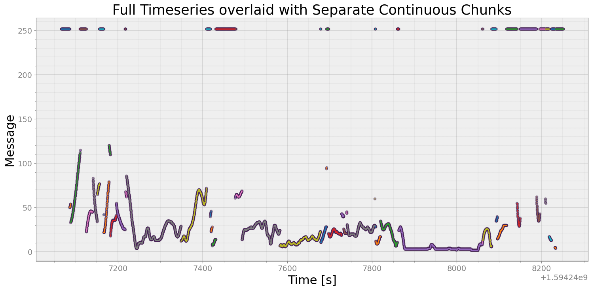
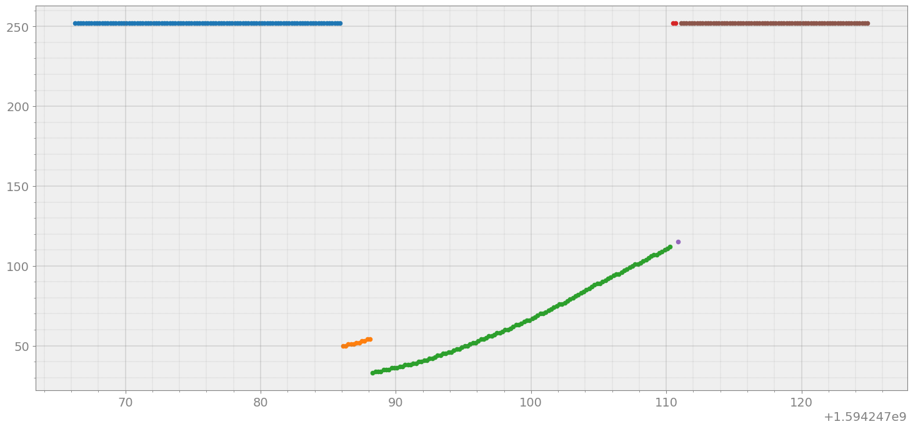
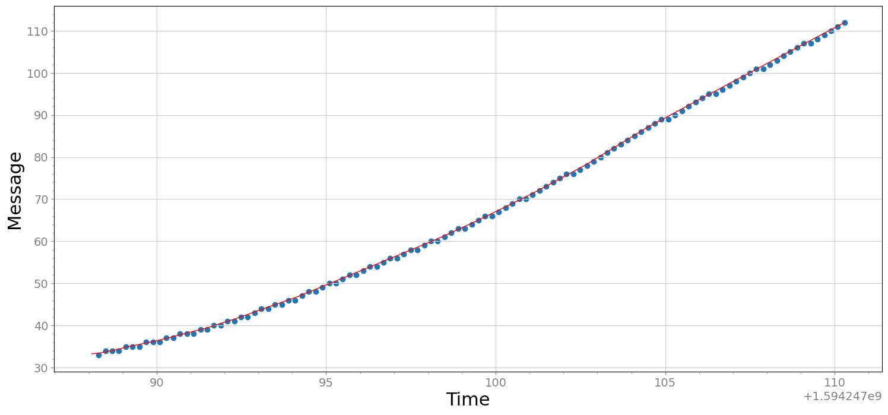
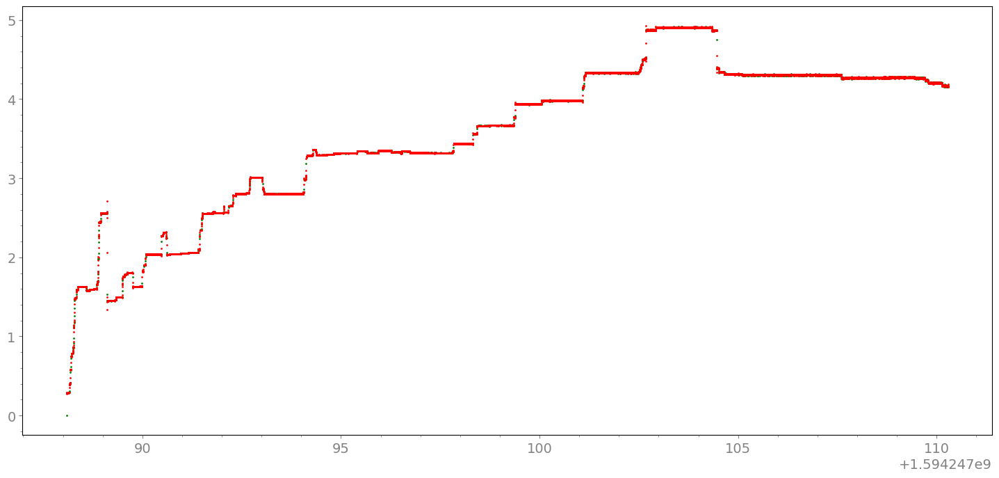
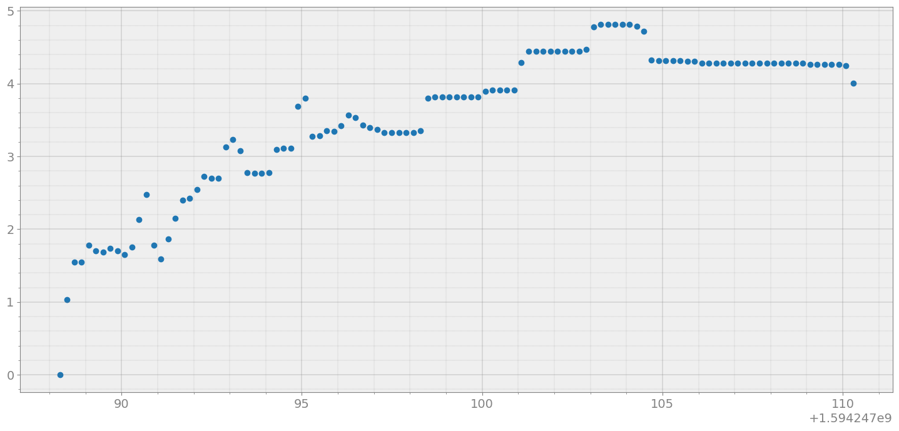
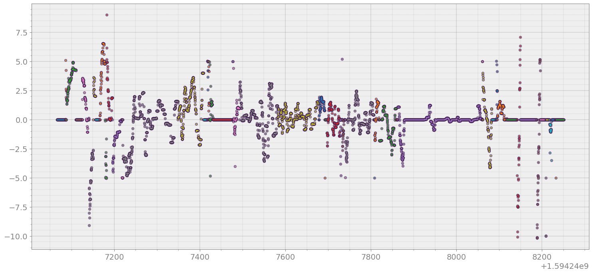
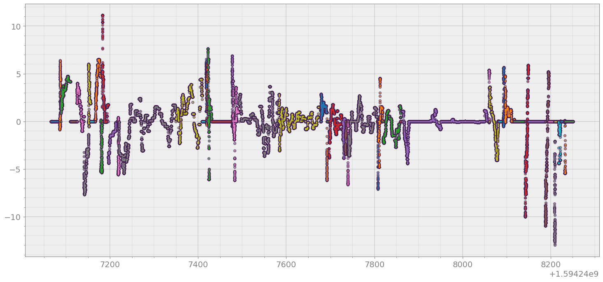

Denoising using AutoEncoder¶
[2]:
import glob
import numpy as np
import matplotlib.pyplot as plt
import pandas as pd
import strym
from strym import strymread
from strym import strymmap
import numpy as np
/home/ivory/anaconda3/envs/dbn/lib/python3.7/site-packages/statsmodels/tools/_testing.py:19: FutureWarning: pandas.util.testing is deprecated. Use the functions in the public API at pandas.testing instead.
import pandas.util.testing as tm
[4]:
folder = '../../PandaData/2020_07_08/'
toyota = "2020-07-08-15-15-54_2T3MWRFVXLW056972"
toyota_can_file = folder + toyota + "_CAN_Messages.csv"
r_toyota = strymread(csvfile=toyota_can_file)
[5]:
lead_dist = r_toyota.get_ts(msg=869,signal="LEAD_DISTANCE")
lead_dist_l = lead_dist[(lead_dist['Time'] - lead_dist['Time'].iloc[0] >= 511)]
lead_dist_l_chunks = strymread.create_chunks(lead_dist_l, plot = True)

[6]:
fig, ax = strymread.create_fig(num_of_subplots=1)
ax[0].scatter(x = 'Time', y = 'Message', data = lead_dist_l_chunks[0], s= 20, marker = 'o')
ax[0].scatter(x = 'Time', y = 'Message', data = lead_dist_l_chunks[1], s= 20, marker = 'o')
ax[0].scatter(x = 'Time', y = 'Message', data = lead_dist_l_chunks[2], s= 20, marker = 'o')
ax[0].scatter(x = 'Time', y = 'Message', data = lead_dist_l_chunks[3], s= 20, marker = 'o')
ax[0].scatter(x = 'Time', y = 'Message', data = lead_dist_l_chunks[4], s= 20, marker = 'o')
ax[0].scatter(x = 'Time', y = 'Message', data = lead_dist_l_chunks[5], s= 20, marker = 'o')
plt.show()

Now, lets design a neural network that will denoise that data, at the same time removes outlier and create a model that can be used for interpolating¶
[7]:
time_original = lead_dist_l_chunks[2]['Time'].values
time = (time_original - time_original[0])/(time_original[-1] - time_original[0])
message_original = lead_dist_l_chunks[2]['Message'].values
msg_max = np.max(message_original)
msg_min = np.min(message_original)
message = (message_original - msg_min)/(msg_max - msg_min)
[8]:
import tensorflow as tf
model = tf.keras.Sequential()
model.add(tf.keras.layers.Dense(units = 1, activation = 'linear', input_shape=[1]))
model.add(tf.keras.layers.Dense(units = 128, activation = 'relu'))
model.add(tf.keras.layers.Dense(units = 64, activation = 'relu'))
model.add(tf.keras.layers.Dense(units = 32, activation = 'relu'))
model.add(tf.keras.layers.Dense(units = 64, activation = 'relu'))
model.add(tf.keras.layers.Dense(units = 128, activation = 'relu'))
model.add(tf.keras.layers.Dense(units = 1, activation = 'linear'))
model.compile(loss='mse', optimizer="adam")
model.summary()
# Training
model.fit( time, message, epochs=1000, verbose=True)
Model: "sequential"
_________________________________________________________________
Layer (type) Output Shape Param #
=================================================================
dense (Dense) (None, 1) 2
_________________________________________________________________
dense_1 (Dense) (None, 128) 256
_________________________________________________________________
dense_2 (Dense) (None, 64) 8256
_________________________________________________________________
dense_3 (Dense) (None, 32) 2080
_________________________________________________________________
dense_4 (Dense) (None, 64) 2112
_________________________________________________________________
dense_5 (Dense) (None, 128) 8320
_________________________________________________________________
dense_6 (Dense) (None, 1) 129
=================================================================
Total params: 21,155
Trainable params: 21,155
Non-trainable params: 0
_________________________________________________________________
Epoch 1/1000
4/4 [==============================] - ETA: 0s - loss: 0.320 - 0s 2ms/step - loss: 0.2382
Epoch 2/1000
4/4 [==============================] - ETA: 0s - loss: 0.162 - 0s 2ms/step - loss: 0.1374
Epoch 3/1000
4/4 [==============================] - ETA: 0s - loss: 0.059 - 0s 2ms/step - loss: 0.0506
Epoch 4/1000
4/4 [==============================] - ETA: 0s - loss: 0.029 - 0s 2ms/step - loss: 0.0338
Epoch 5/1000
4/4 [==============================] - ETA: 0s - loss: 0.054 - 0s 1ms/step - loss: 0.0379
Epoch 6/1000
4/4 [==============================] - ETA: 0s - loss: 0.022 - 0s 1ms/step - loss: 0.0214
Epoch 7/1000
4/4 [==============================] - ETA: 0s - loss: 0.021 - 0s 1ms/step - loss: 0.0230
Epoch 8/1000
4/4 [==============================] - ETA: 0s - loss: 0.019 - 0s 1ms/step - loss: 0.0162
Epoch 9/1000
4/4 [==============================] - ETA: 0s - loss: 0.011 - 0s 1ms/step - loss: 0.0106
Epoch 10/1000
4/4 [==============================] - ETA: 0s - loss: 0.008 - 0s 2ms/step - loss: 0.0073
Epoch 11/1000
4/4 [==============================] - ETA: 0s - loss: 0.004 - 0s 2ms/step - loss: 0.0041
Epoch 12/1000
4/4 [==============================] - ETA: 0s - loss: 0.004 - 0s 2ms/step - loss: 0.0024
Epoch 13/1000
4/4 [==============================] - ETA: 0s - loss: 8.7879e-0 - 0s 1ms/step - loss: 8.1149e-04
Epoch 14/1000
4/4 [==============================] - ETA: 0s - loss: 7.1945e-0 - 0s 2ms/step - loss: 5.0132e-04
Epoch 15/1000
4/4 [==============================] - ETA: 0s - loss: 6.4702e-0 - 0s 1ms/step - loss: 5.8949e-04
Epoch 16/1000
4/4 [==============================] - ETA: 0s - loss: 4.1284e-0 - 0s 1ms/step - loss: 4.2371e-04
Epoch 17/1000
4/4 [==============================] - ETA: 0s - loss: 4.1175e-0 - 0s 1ms/step - loss: 3.5181e-04
Epoch 18/1000
4/4 [==============================] - ETA: 0s - loss: 3.4690e-0 - 0s 1ms/step - loss: 2.4574e-04
Epoch 19/1000
4/4 [==============================] - ETA: 0s - loss: 1.8131e-0 - 0s 1ms/step - loss: 1.7648e-04
Epoch 20/1000
4/4 [==============================] - ETA: 0s - loss: 1.3371e-0 - 0s 2ms/step - loss: 1.5579e-04
Epoch 21/1000
4/4 [==============================] - ETA: 0s - loss: 2.1379e-0 - 0s 1ms/step - loss: 1.3061e-04
Epoch 22/1000
4/4 [==============================] - ETA: 0s - loss: 9.0782e-0 - 0s 2ms/step - loss: 1.1654e-04
Epoch 23/1000
4/4 [==============================] - ETA: 0s - loss: 9.3776e-0 - 0s 2ms/step - loss: 9.2943e-05
Epoch 24/1000
4/4 [==============================] - ETA: 0s - loss: 5.9341e-0 - 0s 2ms/step - loss: 7.5832e-05
Epoch 25/1000
4/4 [==============================] - ETA: 0s - loss: 6.4036e-0 - 0s 1ms/step - loss: 6.2543e-05
Epoch 26/1000
4/4 [==============================] - ETA: 0s - loss: 5.3869e-0 - 0s 2ms/step - loss: 5.3849e-05
Epoch 27/1000
4/4 [==============================] - ETA: 0s - loss: 4.6794e-0 - 0s 2ms/step - loss: 4.5961e-05
Epoch 28/1000
4/4 [==============================] - ETA: 0s - loss: 5.4689e-0 - 0s 2ms/step - loss: 3.9087e-05
Epoch 29/1000
4/4 [==============================] - ETA: 0s - loss: 2.9263e-0 - 0s 1ms/step - loss: 3.1844e-05
Epoch 30/1000
4/4 [==============================] - ETA: 0s - loss: 2.6326e-0 - 0s 2ms/step - loss: 2.8157e-05
Epoch 31/1000
4/4 [==============================] - ETA: 0s - loss: 1.9296e-0 - 0s 2ms/step - loss: 2.7134e-05
Epoch 32/1000
4/4 [==============================] - ETA: 0s - loss: 2.3637e-0 - 0s 2ms/step - loss: 2.3402e-05
Epoch 33/1000
4/4 [==============================] - ETA: 0s - loss: 2.3651e-0 - 0s 1ms/step - loss: 2.2928e-05
Epoch 34/1000
4/4 [==============================] - ETA: 0s - loss: 1.2243e-0 - 0s 1ms/step - loss: 2.2819e-05
Epoch 35/1000
4/4 [==============================] - ETA: 0s - loss: 2.0124e-0 - 0s 1ms/step - loss: 2.1200e-05
Epoch 36/1000
4/4 [==============================] - ETA: 0s - loss: 2.3779e-0 - 0s 2ms/step - loss: 1.9726e-05
Epoch 37/1000
4/4 [==============================] - ETA: 0s - loss: 1.8362e-0 - 0s 3ms/step - loss: 2.0290e-05
Epoch 38/1000
4/4 [==============================] - ETA: 0s - loss: 1.6639e-0 - 0s 3ms/step - loss: 1.8439e-05
Epoch 39/1000
4/4 [==============================] - ETA: 0s - loss: 2.1290e-0 - 0s 2ms/step - loss: 2.0462e-05
Epoch 40/1000
4/4 [==============================] - ETA: 0s - loss: 2.2167e-0 - 0s 2ms/step - loss: 1.9469e-05
Epoch 41/1000
4/4 [==============================] - ETA: 0s - loss: 1.8336e-0 - 0s 2ms/step - loss: 1.9136e-05
Epoch 42/1000
4/4 [==============================] - ETA: 0s - loss: 1.6953e-0 - 0s 2ms/step - loss: 1.8069e-05
Epoch 43/1000
4/4 [==============================] - ETA: 0s - loss: 1.7058e-0 - 0s 2ms/step - loss: 1.8444e-05
Epoch 44/1000
4/4 [==============================] - ETA: 0s - loss: 1.3940e-0 - 0s 2ms/step - loss: 2.1177e-05
Epoch 45/1000
4/4 [==============================] - ETA: 0s - loss: 1.1943e-0 - 0s 2ms/step - loss: 2.1484e-05
Epoch 46/1000
4/4 [==============================] - ETA: 0s - loss: 1.8416e-0 - 0s 1ms/step - loss: 1.7203e-05
Epoch 47/1000
4/4 [==============================] - ETA: 0s - loss: 1.9295e-0 - 0s 1ms/step - loss: 1.7760e-05
Epoch 48/1000
4/4 [==============================] - ETA: 0s - loss: 1.8471e-0 - 0s 1ms/step - loss: 1.7123e-05
Epoch 49/1000
4/4 [==============================] - ETA: 0s - loss: 1.3978e-0 - 0s 1ms/step - loss: 1.7119e-05
Epoch 50/1000
4/4 [==============================] - ETA: 0s - loss: 2.0505e-0 - 0s 1ms/step - loss: 1.7369e-05
Epoch 51/1000
4/4 [==============================] - ETA: 0s - loss: 1.9201e-0 - 0s 2ms/step - loss: 1.8281e-05
Epoch 52/1000
4/4 [==============================] - ETA: 0s - loss: 1.8542e-0 - 0s 1ms/step - loss: 1.6751e-05
Epoch 53/1000
4/4 [==============================] - ETA: 0s - loss: 1.5430e-0 - 0s 1ms/step - loss: 1.7162e-05
Epoch 54/1000
4/4 [==============================] - ETA: 0s - loss: 1.6600e-0 - 0s 1ms/step - loss: 1.6954e-05
Epoch 55/1000
4/4 [==============================] - ETA: 0s - loss: 2.2360e-0 - 0s 2ms/step - loss: 1.7246e-05
Epoch 56/1000
4/4 [==============================] - ETA: 0s - loss: 1.5337e-0 - 0s 2ms/step - loss: 1.6575e-05
Epoch 57/1000
4/4 [==============================] - ETA: 0s - loss: 1.5603e-0 - 0s 1ms/step - loss: 1.6756e-05
Epoch 58/1000
4/4 [==============================] - ETA: 0s - loss: 1.6351e-0 - 0s 1ms/step - loss: 1.6950e-05
Epoch 59/1000
4/4 [==============================] - ETA: 0s - loss: 1.7929e-0 - 0s 1ms/step - loss: 1.7270e-05
Epoch 60/1000
4/4 [==============================] - ETA: 0s - loss: 1.5628e-0 - 0s 1ms/step - loss: 1.8711e-05
Epoch 61/1000
4/4 [==============================] - ETA: 0s - loss: 1.3252e-0 - 0s 1ms/step - loss: 1.6973e-05
Epoch 62/1000
4/4 [==============================] - ETA: 0s - loss: 1.4606e-0 - 0s 1ms/step - loss: 1.7296e-05
Epoch 63/1000
4/4 [==============================] - ETA: 0s - loss: 2.5860e-0 - 0s 2ms/step - loss: 1.8932e-05
Epoch 64/1000
4/4 [==============================] - ETA: 0s - loss: 9.1814e-0 - 0s 1ms/step - loss: 1.7169e-05
Epoch 65/1000
4/4 [==============================] - ETA: 0s - loss: 1.7984e-0 - 0s 2ms/step - loss: 1.6955e-05
Epoch 66/1000
4/4 [==============================] - ETA: 0s - loss: 1.7111e-0 - 0s 1ms/step - loss: 1.6315e-05
Epoch 67/1000
4/4 [==============================] - ETA: 0s - loss: 1.7337e-0 - 0s 1ms/step - loss: 1.7086e-05
Epoch 68/1000
4/4 [==============================] - ETA: 0s - loss: 2.3263e-0 - 0s 2ms/step - loss: 1.6923e-05
Epoch 69/1000
4/4 [==============================] - ETA: 0s - loss: 1.6610e-0 - 0s 2ms/step - loss: 1.6005e-05
Epoch 70/1000
4/4 [==============================] - ETA: 0s - loss: 2.0214e-0 - 0s 1ms/step - loss: 1.7656e-05
Epoch 71/1000
4/4 [==============================] - ETA: 0s - loss: 1.7118e-0 - 0s 1ms/step - loss: 1.5983e-05
Epoch 72/1000
4/4 [==============================] - ETA: 0s - loss: 1.5962e-0 - 0s 2ms/step - loss: 1.8914e-05
Epoch 73/1000
4/4 [==============================] - ETA: 0s - loss: 2.3868e-0 - 0s 2ms/step - loss: 1.7601e-05
Epoch 74/1000
4/4 [==============================] - ETA: 0s - loss: 1.2282e-0 - 0s 2ms/step - loss: 1.5902e-05
Epoch 75/1000
4/4 [==============================] - ETA: 0s - loss: 1.8151e-0 - 0s 2ms/step - loss: 1.9237e-05
Epoch 76/1000
4/4 [==============================] - ETA: 0s - loss: 2.4790e-0 - 0s 2ms/step - loss: 1.8503e-05
Epoch 77/1000
4/4 [==============================] - ETA: 0s - loss: 1.5354e-0 - 0s 2ms/step - loss: 1.7370e-05
Epoch 78/1000
4/4 [==============================] - ETA: 0s - loss: 1.6425e-0 - 0s 2ms/step - loss: 1.9702e-05
Epoch 79/1000
4/4 [==============================] - ETA: 0s - loss: 1.9424e-0 - 0s 1ms/step - loss: 2.1095e-05
Epoch 80/1000
4/4 [==============================] - ETA: 0s - loss: 2.9304e-0 - 0s 1ms/step - loss: 2.2924e-05
Epoch 81/1000
4/4 [==============================] - ETA: 0s - loss: 1.7208e-0 - 0s 1ms/step - loss: 1.8204e-05
Epoch 82/1000
4/4 [==============================] - ETA: 0s - loss: 1.7230e-0 - 0s 1ms/step - loss: 1.6892e-05
Epoch 83/1000
4/4 [==============================] - ETA: 0s - loss: 1.7873e-0 - 0s 1ms/step - loss: 1.8488e-05
Epoch 84/1000
4/4 [==============================] - ETA: 0s - loss: 2.1474e-0 - 0s 2ms/step - loss: 1.5762e-05
Epoch 85/1000
4/4 [==============================] - ETA: 0s - loss: 1.3414e-0 - 0s 2ms/step - loss: 1.6736e-05
Epoch 86/1000
4/4 [==============================] - ETA: 0s - loss: 1.5686e-0 - 0s 1ms/step - loss: 1.8297e-05
Epoch 87/1000
4/4 [==============================] - ETA: 0s - loss: 1.7565e-0 - 0s 2ms/step - loss: 1.5783e-05
Epoch 88/1000
4/4 [==============================] - ETA: 0s - loss: 1.4167e-0 - 0s 1ms/step - loss: 1.5796e-05
Epoch 89/1000
4/4 [==============================] - ETA: 0s - loss: 2.1598e-0 - 0s 2ms/step - loss: 1.9474e-05
Epoch 90/1000
4/4 [==============================] - ETA: 0s - loss: 1.6660e-0 - 0s 1ms/step - loss: 1.5596e-05
Epoch 91/1000
4/4 [==============================] - ETA: 0s - loss: 1.5021e-0 - 0s 2ms/step - loss: 1.7972e-05
Epoch 92/1000
4/4 [==============================] - ETA: 0s - loss: 1.9048e-0 - 0s 2ms/step - loss: 1.6651e-05
Epoch 93/1000
4/4 [==============================] - ETA: 0s - loss: 1.7134e-0 - 0s 2ms/step - loss: 1.6918e-05
Epoch 94/1000
4/4 [==============================] - ETA: 0s - loss: 1.5263e-0 - 0s 1ms/step - loss: 1.6065e-05
Epoch 95/1000
4/4 [==============================] - ETA: 0s - loss: 1.4449e-0 - 0s 1ms/step - loss: 1.7721e-05
Epoch 96/1000
4/4 [==============================] - ETA: 0s - loss: 1.4479e-0 - 0s 2ms/step - loss: 1.7674e-05
Epoch 97/1000
4/4 [==============================] - ETA: 0s - loss: 2.0419e-0 - 0s 1ms/step - loss: 1.6928e-05
Epoch 98/1000
4/4 [==============================] - ETA: 0s - loss: 1.5871e-0 - 0s 2ms/step - loss: 2.0354e-05
Epoch 99/1000
4/4 [==============================] - ETA: 0s - loss: 1.7216e-0 - 0s 2ms/step - loss: 1.9405e-05
Epoch 100/1000
4/4 [==============================] - ETA: 0s - loss: 2.0133e-0 - 0s 2ms/step - loss: 2.8789e-05
Epoch 101/1000
4/4 [==============================] - ETA: 0s - loss: 2.2832e-0 - 0s 2ms/step - loss: 2.4348e-05
Epoch 102/1000
4/4 [==============================] - ETA: 0s - loss: 2.2980e-0 - 0s 2ms/step - loss: 2.5562e-05
Epoch 103/1000
4/4 [==============================] - ETA: 0s - loss: 6.5148e-0 - 0s 2ms/step - loss: 3.6071e-05
Epoch 104/1000
4/4 [==============================] - ETA: 0s - loss: 2.2849e-0 - 0s 2ms/step - loss: 2.0915e-05
Epoch 105/1000
4/4 [==============================] - ETA: 0s - loss: 1.4865e-0 - 0s 2ms/step - loss: 1.7045e-05
Epoch 106/1000
4/4 [==============================] - ETA: 0s - loss: 1.8782e-0 - 0s 2ms/step - loss: 1.7567e-05
Epoch 107/1000
4/4 [==============================] - ETA: 0s - loss: 1.7556e-0 - 0s 2ms/step - loss: 1.6242e-05
Epoch 108/1000
4/4 [==============================] - ETA: 0s - loss: 1.0153e-0 - 0s 1ms/step - loss: 1.6980e-05
Epoch 109/1000
4/4 [==============================] - ETA: 0s - loss: 2.1371e-0 - 0s 2ms/step - loss: 1.8601e-05
Epoch 110/1000
4/4 [==============================] - ETA: 0s - loss: 1.9106e-0 - 0s 2ms/step - loss: 1.6001e-05
Epoch 111/1000
4/4 [==============================] - ETA: 0s - loss: 1.5751e-0 - 0s 1ms/step - loss: 1.6305e-05
Epoch 112/1000
4/4 [==============================] - ETA: 0s - loss: 1.9905e-0 - 0s 2ms/step - loss: 1.6035e-05
Epoch 113/1000
4/4 [==============================] - ETA: 0s - loss: 1.2932e-0 - 0s 2ms/step - loss: 1.5302e-05
Epoch 114/1000
4/4 [==============================] - ETA: 0s - loss: 8.3633e-0 - 0s 1ms/step - loss: 1.5715e-05
Epoch 115/1000
4/4 [==============================] - ETA: 0s - loss: 1.5210e-0 - 0s 2ms/step - loss: 1.5726e-05
Epoch 116/1000
4/4 [==============================] - ETA: 0s - loss: 1.5460e-0 - 0s 2ms/step - loss: 1.6882e-05
Epoch 117/1000
4/4 [==============================] - ETA: 0s - loss: 2.3209e-0 - 0s 2ms/step - loss: 1.9707e-05
Epoch 118/1000
4/4 [==============================] - ETA: 0s - loss: 1.2550e-0 - 0s 1ms/step - loss: 1.5873e-05
Epoch 119/1000
4/4 [==============================] - ETA: 0s - loss: 1.5630e-0 - 0s 2ms/step - loss: 1.4996e-05
Epoch 120/1000
4/4 [==============================] - ETA: 0s - loss: 1.1478e-0 - 0s 2ms/step - loss: 1.5142e-05
Epoch 121/1000
4/4 [==============================] - ETA: 0s - loss: 1.6684e-0 - 0s 2ms/step - loss: 1.5459e-05
Epoch 122/1000
4/4 [==============================] - ETA: 0s - loss: 1.5410e-0 - 0s 2ms/step - loss: 1.5949e-05
Epoch 123/1000
4/4 [==============================] - ETA: 0s - loss: 2.1159e-0 - 0s 2ms/step - loss: 1.9014e-05
Epoch 124/1000
4/4 [==============================] - ETA: 0s - loss: 1.7772e-0 - 0s 2ms/step - loss: 1.9856e-05
Epoch 125/1000
4/4 [==============================] - ETA: 0s - loss: 1.5729e-0 - 0s 2ms/step - loss: 1.6203e-05
Epoch 126/1000
4/4 [==============================] - ETA: 0s - loss: 1.9212e-0 - 0s 2ms/step - loss: 1.5451e-05
Epoch 127/1000
4/4 [==============================] - ETA: 0s - loss: 1.6748e-0 - 0s 2ms/step - loss: 1.5731e-05
Epoch 128/1000
4/4 [==============================] - ETA: 0s - loss: 1.9330e-0 - 0s 2ms/step - loss: 1.6609e-05
Epoch 129/1000
4/4 [==============================] - ETA: 0s - loss: 1.6558e-0 - 0s 2ms/step - loss: 1.6199e-05
Epoch 130/1000
4/4 [==============================] - ETA: 0s - loss: 1.5970e-0 - 0s 2ms/step - loss: 1.5867e-05
Epoch 131/1000
4/4 [==============================] - ETA: 0s - loss: 1.8146e-0 - 0s 2ms/step - loss: 1.5986e-05
Epoch 132/1000
4/4 [==============================] - ETA: 0s - loss: 1.6407e-0 - 0s 2ms/step - loss: 1.5705e-05
Epoch 133/1000
4/4 [==============================] - ETA: 0s - loss: 2.0768e-0 - 0s 2ms/step - loss: 1.8731e-05
Epoch 134/1000
4/4 [==============================] - ETA: 0s - loss: 1.9228e-0 - 0s 1ms/step - loss: 2.0034e-05
Epoch 135/1000
4/4 [==============================] - ETA: 0s - loss: 1.6969e-0 - 0s 2ms/step - loss: 1.7085e-05
Epoch 136/1000
4/4 [==============================] - ETA: 0s - loss: 1.5360e-0 - 0s 2ms/step - loss: 1.5924e-05
Epoch 137/1000
4/4 [==============================] - ETA: 0s - loss: 1.8266e-0 - 0s 2ms/step - loss: 1.4653e-05
Epoch 138/1000
4/4 [==============================] - ETA: 0s - loss: 1.1185e-0 - 0s 2ms/step - loss: 1.4702e-05
Epoch 139/1000
4/4 [==============================] - ETA: 0s - loss: 1.3590e-0 - 0s 2ms/step - loss: 1.4629e-05
Epoch 140/1000
4/4 [==============================] - ETA: 0s - loss: 1.2160e-0 - 0s 2ms/step - loss: 1.5054e-05
Epoch 141/1000
4/4 [==============================] - ETA: 0s - loss: 1.6137e-0 - 0s 2ms/step - loss: 1.6594e-05
Epoch 142/1000
4/4 [==============================] - ETA: 0s - loss: 1.4973e-0 - 0s 2ms/step - loss: 1.6473e-05
Epoch 143/1000
4/4 [==============================] - ETA: 0s - loss: 1.5928e-0 - 0s 2ms/step - loss: 1.5771e-05
Epoch 144/1000
4/4 [==============================] - ETA: 0s - loss: 2.0191e-0 - 0s 2ms/step - loss: 1.7118e-05
Epoch 145/1000
4/4 [==============================] - ETA: 0s - loss: 1.4311e-0 - 0s 2ms/step - loss: 1.5013e-05
Epoch 146/1000
4/4 [==============================] - ETA: 0s - loss: 1.5653e-0 - 0s 2ms/step - loss: 1.5603e-05
Epoch 147/1000
4/4 [==============================] - ETA: 0s - loss: 1.2543e-0 - 0s 2ms/step - loss: 1.4764e-05
Epoch 148/1000
4/4 [==============================] - ETA: 0s - loss: 1.1175e-0 - 0s 2ms/step - loss: 1.5821e-05
Epoch 149/1000
4/4 [==============================] - ETA: 0s - loss: 1.1227e-0 - 0s 2ms/step - loss: 1.9951e-05
Epoch 150/1000
4/4 [==============================] - ETA: 0s - loss: 1.8269e-0 - 0s 2ms/step - loss: 1.8415e-05
Epoch 151/1000
4/4 [==============================] - ETA: 0s - loss: 1.7290e-0 - 0s 2ms/step - loss: 1.6673e-05
Epoch 152/1000
4/4 [==============================] - ETA: 0s - loss: 1.3201e-0 - 0s 4ms/step - loss: 1.6048e-05
Epoch 153/1000
4/4 [==============================] - ETA: 0s - loss: 1.6316e-0 - 0s 2ms/step - loss: 1.6518e-05
Epoch 154/1000
4/4 [==============================] - ETA: 0s - loss: 1.5162e-0 - 0s 2ms/step - loss: 1.4520e-05
Epoch 155/1000
4/4 [==============================] - ETA: 0s - loss: 1.8055e-0 - 0s 2ms/step - loss: 1.5741e-05
Epoch 156/1000
4/4 [==============================] - ETA: 0s - loss: 1.1953e-0 - 0s 2ms/step - loss: 1.4411e-05
Epoch 157/1000
4/4 [==============================] - ETA: 0s - loss: 1.3871e-0 - 0s 2ms/step - loss: 1.4760e-05
Epoch 158/1000
4/4 [==============================] - ETA: 0s - loss: 2.4090e-0 - 0s 2ms/step - loss: 1.7524e-05
Epoch 159/1000
4/4 [==============================] - ETA: 0s - loss: 1.8171e-0 - 0s 2ms/step - loss: 1.6889e-05
Epoch 160/1000
4/4 [==============================] - ETA: 0s - loss: 1.7397e-0 - 0s 1ms/step - loss: 1.5116e-05
Epoch 161/1000
4/4 [==============================] - ETA: 0s - loss: 1.7728e-0 - 0s 1ms/step - loss: 1.6794e-05
Epoch 162/1000
4/4 [==============================] - ETA: 0s - loss: 1.2779e-0 - 0s 2ms/step - loss: 1.5661e-05
Epoch 163/1000
4/4 [==============================] - ETA: 0s - loss: 1.4425e-0 - 0s 1ms/step - loss: 1.5151e-05
Epoch 164/1000
4/4 [==============================] - ETA: 0s - loss: 1.7017e-0 - 0s 1ms/step - loss: 1.4620e-05
Epoch 165/1000
4/4 [==============================] - ETA: 0s - loss: 1.3645e-0 - 0s 2ms/step - loss: 1.4947e-05
Epoch 166/1000
4/4 [==============================] - ETA: 0s - loss: 1.2128e-0 - 0s 1ms/step - loss: 1.5907e-05
Epoch 167/1000
4/4 [==============================] - ETA: 0s - loss: 1.6569e-0 - 0s 1ms/step - loss: 1.8654e-05
Epoch 168/1000
4/4 [==============================] - ETA: 0s - loss: 2.0781e-0 - 0s 2ms/step - loss: 2.1438e-05
Epoch 169/1000
4/4 [==============================] - ETA: 0s - loss: 1.6886e-0 - 0s 2ms/step - loss: 1.6960e-05
Epoch 170/1000
4/4 [==============================] - ETA: 0s - loss: 1.9729e-0 - 0s 2ms/step - loss: 1.5543e-05
Epoch 171/1000
4/4 [==============================] - ETA: 0s - loss: 2.2963e-0 - 0s 1ms/step - loss: 1.7169e-05
Epoch 172/1000
4/4 [==============================] - ETA: 0s - loss: 1.5061e-0 - 0s 1ms/step - loss: 1.6593e-05
Epoch 173/1000
4/4 [==============================] - ETA: 0s - loss: 1.6255e-0 - 0s 2ms/step - loss: 1.4853e-05
Epoch 174/1000
4/4 [==============================] - ETA: 0s - loss: 1.1852e-0 - 0s 1ms/step - loss: 1.4679e-05
Epoch 175/1000
4/4 [==============================] - ETA: 0s - loss: 1.3717e-0 - 0s 1ms/step - loss: 1.5247e-05
Epoch 176/1000
4/4 [==============================] - ETA: 0s - loss: 2.2607e-0 - 0s 1ms/step - loss: 1.7629e-05
Epoch 177/1000
4/4 [==============================] - ETA: 0s - loss: 1.4707e-0 - 0s 1ms/step - loss: 1.5296e-05
Epoch 178/1000
4/4 [==============================] - ETA: 0s - loss: 1.2768e-0 - 0s 2ms/step - loss: 1.5822e-05
Epoch 179/1000
4/4 [==============================] - ETA: 0s - loss: 1.7237e-0 - 0s 1ms/step - loss: 1.5411e-05
Epoch 180/1000
4/4 [==============================] - ETA: 0s - loss: 1.5555e-0 - 0s 2ms/step - loss: 1.3852e-05
Epoch 181/1000
4/4 [==============================] - ETA: 0s - loss: 1.2387e-0 - 0s 1ms/step - loss: 1.5295e-05
Epoch 182/1000
4/4 [==============================] - ETA: 0s - loss: 1.2748e-0 - 0s 1ms/step - loss: 1.5919e-05
Epoch 183/1000
4/4 [==============================] - ETA: 0s - loss: 1.9535e-0 - 0s 2ms/step - loss: 1.8616e-05
Epoch 184/1000
4/4 [==============================] - ETA: 0s - loss: 1.5982e-0 - 0s 1ms/step - loss: 2.0408e-05
Epoch 185/1000
4/4 [==============================] - ETA: 0s - loss: 1.9577e-0 - 0s 1ms/step - loss: 2.3397e-05
Epoch 186/1000
4/4 [==============================] - ETA: 0s - loss: 1.4524e-0 - 0s 2ms/step - loss: 2.0933e-05
Epoch 187/1000
4/4 [==============================] - ETA: 0s - loss: 1.6319e-0 - 0s 2ms/step - loss: 1.6044e-05
Epoch 188/1000
4/4 [==============================] - ETA: 0s - loss: 1.1337e-0 - 0s 1ms/step - loss: 1.6437e-05
Epoch 189/1000
4/4 [==============================] - ETA: 0s - loss: 1.3864e-0 - 0s 2ms/step - loss: 1.5388e-05
Epoch 190/1000
4/4 [==============================] - ETA: 0s - loss: 1.6944e-0 - 0s 2ms/step - loss: 1.6973e-05
Epoch 191/1000
4/4 [==============================] - ETA: 0s - loss: 1.5656e-0 - 0s 2ms/step - loss: 1.9153e-05
Epoch 192/1000
4/4 [==============================] - ETA: 0s - loss: 1.7240e-0 - 0s 1ms/step - loss: 1.5447e-05
Epoch 193/1000
4/4 [==============================] - ETA: 0s - loss: 1.1284e-0 - 0s 2ms/step - loss: 1.4277e-05
Epoch 194/1000
4/4 [==============================] - ETA: 0s - loss: 1.6073e-0 - 0s 2ms/step - loss: 2.0790e-05
Epoch 195/1000
4/4 [==============================] - ETA: 0s - loss: 1.5077e-0 - 0s 1ms/step - loss: 1.8791e-05
Epoch 196/1000
4/4 [==============================] - ETA: 0s - loss: 2.0633e-0 - 0s 1ms/step - loss: 1.8155e-05
Epoch 197/1000
4/4 [==============================] - ETA: 0s - loss: 1.1670e-0 - 0s 2ms/step - loss: 1.6264e-05
Epoch 198/1000
4/4 [==============================] - ETA: 0s - loss: 2.0047e-0 - 0s 2ms/step - loss: 1.7724e-05
Epoch 199/1000
4/4 [==============================] - ETA: 0s - loss: 1.5298e-0 - 0s 2ms/step - loss: 1.8052e-05
Epoch 200/1000
4/4 [==============================] - ETA: 0s - loss: 2.0640e-0 - 0s 1ms/step - loss: 1.8743e-05
Epoch 201/1000
4/4 [==============================] - ETA: 0s - loss: 2.6406e-0 - 0s 2ms/step - loss: 2.3447e-05
Epoch 202/1000
4/4 [==============================] - ETA: 0s - loss: 1.4818e-0 - 0s 2ms/step - loss: 2.3594e-05
Epoch 203/1000
4/4 [==============================] - ETA: 0s - loss: 4.3806e-0 - 0s 1ms/step - loss: 3.3651e-05
Epoch 204/1000
4/4 [==============================] - ETA: 0s - loss: 1.7818e-0 - 0s 1ms/step - loss: 2.3823e-05
Epoch 205/1000
4/4 [==============================] - ETA: 0s - loss: 2.7607e-0 - 0s 2ms/step - loss: 2.0224e-05
Epoch 206/1000
4/4 [==============================] - ETA: 0s - loss: 1.2593e-0 - 0s 2ms/step - loss: 1.9884e-05
Epoch 207/1000
4/4 [==============================] - ETA: 0s - loss: 2.8691e-0 - 0s 2ms/step - loss: 2.7037e-05
Epoch 208/1000
4/4 [==============================] - ETA: 0s - loss: 2.0760e-0 - 0s 2ms/step - loss: 1.9117e-05
Epoch 209/1000
4/4 [==============================] - ETA: 0s - loss: 1.2756e-0 - 0s 2ms/step - loss: 2.2021e-05
Epoch 210/1000
4/4 [==============================] - ETA: 0s - loss: 2.3969e-0 - 0s 2ms/step - loss: 2.2292e-05
Epoch 211/1000
4/4 [==============================] - ETA: 0s - loss: 3.1469e-0 - 0s 2ms/step - loss: 2.4910e-05
Epoch 212/1000
4/4 [==============================] - ETA: 0s - loss: 1.5124e-0 - 0s 2ms/step - loss: 1.8912e-05
Epoch 213/1000
4/4 [==============================] - ETA: 0s - loss: 1.7656e-0 - 0s 2ms/step - loss: 1.5716e-05
Epoch 214/1000
4/4 [==============================] - ETA: 0s - loss: 1.3085e-0 - 0s 2ms/step - loss: 1.4972e-05
Epoch 215/1000
4/4 [==============================] - ETA: 0s - loss: 1.5970e-0 - 0s 2ms/step - loss: 1.5675e-05
Epoch 216/1000
4/4 [==============================] - ETA: 0s - loss: 1.8376e-0 - 0s 2ms/step - loss: 1.4318e-05
Epoch 217/1000
4/4 [==============================] - ETA: 0s - loss: 1.8357e-0 - 0s 1ms/step - loss: 1.7488e-05
Epoch 218/1000
4/4 [==============================] - ETA: 0s - loss: 3.5922e-0 - 0s 2ms/step - loss: 2.6349e-05
Epoch 219/1000
4/4 [==============================] - ETA: 0s - loss: 2.5655e-0 - 0s 1ms/step - loss: 2.5158e-05
Epoch 220/1000
4/4 [==============================] - ETA: 0s - loss: 3.2052e-0 - 0s 1ms/step - loss: 2.1523e-05
Epoch 221/1000
4/4 [==============================] - ETA: 0s - loss: 1.0985e-0 - 0s 2ms/step - loss: 1.6729e-05
Epoch 222/1000
4/4 [==============================] - ETA: 0s - loss: 1.5622e-0 - 0s 1ms/step - loss: 1.5737e-05
Epoch 223/1000
4/4 [==============================] - ETA: 0s - loss: 2.1222e-0 - 0s 2ms/step - loss: 1.5834e-05
Epoch 224/1000
4/4 [==============================] - ETA: 0s - loss: 1.6488e-0 - 0s 2ms/step - loss: 1.5053e-05
Epoch 225/1000
4/4 [==============================] - ETA: 0s - loss: 1.8030e-0 - 0s 2ms/step - loss: 1.8172e-05
Epoch 226/1000
4/4 [==============================] - ETA: 0s - loss: 1.2374e-0 - 0s 1ms/step - loss: 2.0637e-05
Epoch 227/1000
4/4 [==============================] - ETA: 0s - loss: 2.0597e-0 - 0s 2ms/step - loss: 1.8262e-05
Epoch 228/1000
4/4 [==============================] - ETA: 0s - loss: 1.9121e-0 - 0s 2ms/step - loss: 1.5365e-05
Epoch 229/1000
4/4 [==============================] - ETA: 0s - loss: 1.5051e-0 - 0s 2ms/step - loss: 1.3760e-05
Epoch 230/1000
4/4 [==============================] - ETA: 0s - loss: 2.0790e-0 - 0s 2ms/step - loss: 2.3441e-05
Epoch 231/1000
4/4 [==============================] - ETA: 0s - loss: 1.6031e-0 - 0s 2ms/step - loss: 1.9797e-05
Epoch 232/1000
4/4 [==============================] - ETA: 0s - loss: 2.6954e-0 - 0s 2ms/step - loss: 2.1592e-05
Epoch 233/1000
4/4 [==============================] - ETA: 0s - loss: 1.9857e-0 - 0s 2ms/step - loss: 1.4387e-05
Epoch 234/1000
4/4 [==============================] - ETA: 0s - loss: 2.2486e-0 - 0s 3ms/step - loss: 1.9718e-05
Epoch 235/1000
4/4 [==============================] - ETA: 0s - loss: 1.4771e-0 - 0s 2ms/step - loss: 1.7264e-05
Epoch 236/1000
4/4 [==============================] - ETA: 0s - loss: 1.7098e-0 - 0s 2ms/step - loss: 1.5313e-05
Epoch 237/1000
4/4 [==============================] - ETA: 0s - loss: 1.4050e-0 - 0s 2ms/step - loss: 1.6201e-05
Epoch 238/1000
4/4 [==============================] - ETA: 0s - loss: 1.4757e-0 - 0s 2ms/step - loss: 1.7814e-05
Epoch 239/1000
4/4 [==============================] - ETA: 0s - loss: 1.5837e-0 - 0s 3ms/step - loss: 1.8411e-05
Epoch 240/1000
4/4 [==============================] - ETA: 0s - loss: 1.5649e-0 - 0s 2ms/step - loss: 1.5482e-05
Epoch 241/1000
4/4 [==============================] - ETA: 0s - loss: 1.2391e-0 - 0s 2ms/step - loss: 1.4670e-05
Epoch 242/1000
4/4 [==============================] - ETA: 0s - loss: 1.6997e-0 - 0s 2ms/step - loss: 1.4109e-05
Epoch 243/1000
4/4 [==============================] - ETA: 0s - loss: 1.4114e-0 - 0s 2ms/step - loss: 1.5400e-05
Epoch 244/1000
4/4 [==============================] - ETA: 0s - loss: 1.4989e-0 - 0s 2ms/step - loss: 1.6903e-05
Epoch 245/1000
4/4 [==============================] - ETA: 0s - loss: 1.2861e-0 - 0s 2ms/step - loss: 1.3983e-05
Epoch 246/1000
4/4 [==============================] - ETA: 0s - loss: 1.2584e-0 - 0s 4ms/step - loss: 1.3806e-05
Epoch 247/1000
4/4 [==============================] - ETA: 0s - loss: 1.3824e-0 - 0s 3ms/step - loss: 1.3276e-05
Epoch 248/1000
4/4 [==============================] - ETA: 0s - loss: 1.3646e-0 - 0s 2ms/step - loss: 1.3781e-05
Epoch 249/1000
4/4 [==============================] - ETA: 0s - loss: 1.5524e-0 - 0s 1ms/step - loss: 1.3839e-05
Epoch 250/1000
4/4 [==============================] - ETA: 0s - loss: 1.2187e-0 - 0s 2ms/step - loss: 1.2972e-05
Epoch 251/1000
4/4 [==============================] - ETA: 0s - loss: 1.3121e-0 - 0s 2ms/step - loss: 1.6016e-05
Epoch 252/1000
4/4 [==============================] - ETA: 0s - loss: 1.0835e-0 - 0s 2ms/step - loss: 1.6351e-05
Epoch 253/1000
4/4 [==============================] - ETA: 0s - loss: 1.3771e-0 - 0s 2ms/step - loss: 1.5764e-05
Epoch 254/1000
4/4 [==============================] - ETA: 0s - loss: 8.4507e-0 - 0s 2ms/step - loss: 1.4941e-05
Epoch 255/1000
4/4 [==============================] - ETA: 0s - loss: 2.2696e-0 - 0s 2ms/step - loss: 2.1086e-05
Epoch 256/1000
4/4 [==============================] - ETA: 0s - loss: 1.2582e-0 - 0s 2ms/step - loss: 1.7857e-05
Epoch 257/1000
4/4 [==============================] - ETA: 0s - loss: 3.1515e-0 - 0s 2ms/step - loss: 1.9133e-05
Epoch 258/1000
4/4 [==============================] - ETA: 0s - loss: 2.1809e-0 - 0s 2ms/step - loss: 1.6261e-05
Epoch 259/1000
4/4 [==============================] - ETA: 0s - loss: 1.4163e-0 - 0s 2ms/step - loss: 1.3848e-05
Epoch 260/1000
4/4 [==============================] - ETA: 0s - loss: 1.2303e-0 - 0s 2ms/step - loss: 1.4656e-05
Epoch 261/1000
4/4 [==============================] - ETA: 0s - loss: 1.1247e-0 - 0s 3ms/step - loss: 1.4766e-05
Epoch 262/1000
4/4 [==============================] - ETA: 0s - loss: 2.0343e-0 - 0s 2ms/step - loss: 2.0225e-05
Epoch 263/1000
4/4 [==============================] - ETA: 0s - loss: 1.8378e-0 - 0s 2ms/step - loss: 1.6159e-05
Epoch 264/1000
4/4 [==============================] - ETA: 0s - loss: 1.5051e-0 - 0s 2ms/step - loss: 1.5622e-05
Epoch 265/1000
4/4 [==============================] - ETA: 0s - loss: 1.9655e-0 - 0s 2ms/step - loss: 2.9009e-05
Epoch 266/1000
4/4 [==============================] - ETA: 0s - loss: 1.4146e-0 - 0s 2ms/step - loss: 3.3703e-05
Epoch 267/1000
4/4 [==============================] - ETA: 0s - loss: 4.0300e-0 - 0s 2ms/step - loss: 3.4670e-05
Epoch 268/1000
4/4 [==============================] - ETA: 0s - loss: 3.8991e-0 - 0s 2ms/step - loss: 2.3641e-05
Epoch 269/1000
4/4 [==============================] - ETA: 0s - loss: 1.6721e-0 - 0s 2ms/step - loss: 2.5191e-05
Epoch 270/1000
4/4 [==============================] - ETA: 0s - loss: 2.4871e-0 - 0s 2ms/step - loss: 1.9776e-05
Epoch 271/1000
4/4 [==============================] - ETA: 0s - loss: 1.5236e-0 - 0s 2ms/step - loss: 1.9342e-05
Epoch 272/1000
4/4 [==============================] - ETA: 0s - loss: 2.2558e-0 - 0s 2ms/step - loss: 1.7467e-05
Epoch 273/1000
4/4 [==============================] - ETA: 0s - loss: 1.5380e-0 - 0s 2ms/step - loss: 2.0895e-05
Epoch 274/1000
4/4 [==============================] - ETA: 0s - loss: 1.5512e-0 - 0s 2ms/step - loss: 2.3637e-05
Epoch 275/1000
4/4 [==============================] - ETA: 0s - loss: 2.0317e-0 - 0s 2ms/step - loss: 2.4161e-05
Epoch 276/1000
4/4 [==============================] - ETA: 0s - loss: 9.1703e-0 - 0s 2ms/step - loss: 5.8212e-05
Epoch 277/1000
4/4 [==============================] - ETA: 0s - loss: 3.0709e-0 - 0s 2ms/step - loss: 4.7052e-05
Epoch 278/1000
4/4 [==============================] - ETA: 0s - loss: 1.1940e-0 - 0s 2ms/step - loss: 7.9826e-05
Epoch 279/1000
4/4 [==============================] - ETA: 0s - loss: 1.8809e-0 - 0s 2ms/step - loss: 3.4095e-05
Epoch 280/1000
4/4 [==============================] - ETA: 0s - loss: 3.4527e-0 - 0s 2ms/step - loss: 3.2642e-05
Epoch 281/1000
4/4 [==============================] - ETA: 0s - loss: 3.3141e-0 - 0s 2ms/step - loss: 2.5363e-05
Epoch 282/1000
4/4 [==============================] - ETA: 0s - loss: 1.2963e-0 - 0s 1ms/step - loss: 1.7425e-05
Epoch 283/1000
4/4 [==============================] - ETA: 0s - loss: 2.2981e-0 - 0s 2ms/step - loss: 1.9147e-05
Epoch 284/1000
4/4 [==============================] - ETA: 0s - loss: 1.5464e-0 - 0s 2ms/step - loss: 1.4804e-05
Epoch 285/1000
4/4 [==============================] - ETA: 0s - loss: 1.3672e-0 - 0s 2ms/step - loss: 1.4572e-05
Epoch 286/1000
4/4 [==============================] - ETA: 0s - loss: 1.2191e-0 - 0s 1ms/step - loss: 1.4977e-05
Epoch 287/1000
4/4 [==============================] - ETA: 0s - loss: 1.5165e-0 - 0s 2ms/step - loss: 2.0279e-05
Epoch 288/1000
4/4 [==============================] - ETA: 0s - loss: 1.4774e-0 - 0s 1ms/step - loss: 1.6031e-05
Epoch 289/1000
4/4 [==============================] - ETA: 0s - loss: 1.2722e-0 - 0s 2ms/step - loss: 3.2628e-05
Epoch 290/1000
4/4 [==============================] - ETA: 0s - loss: 7.9222e-0 - 0s 1ms/step - loss: 5.8588e-05
Epoch 291/1000
4/4 [==============================] - ETA: 0s - loss: 5.3713e-0 - 0s 2ms/step - loss: 5.1804e-05
Epoch 292/1000
4/4 [==============================] - ETA: 0s - loss: 4.4484e-0 - 0s 2ms/step - loss: 4.1738e-05
Epoch 293/1000
4/4 [==============================] - ETA: 0s - loss: 5.3736e-0 - 0s 2ms/step - loss: 4.2106e-05
Epoch 294/1000
4/4 [==============================] - ETA: 0s - loss: 1.2498e-0 - 0s 2ms/step - loss: 2.2725e-05
Epoch 295/1000
4/4 [==============================] - ETA: 0s - loss: 3.9093e-0 - 0s 2ms/step - loss: 2.9282e-05
Epoch 296/1000
4/4 [==============================] - ETA: 0s - loss: 1.4330e-0 - 0s 2ms/step - loss: 2.3025e-05
Epoch 297/1000
4/4 [==============================] - ETA: 0s - loss: 2.2662e-0 - 0s 2ms/step - loss: 2.0435e-05
Epoch 298/1000
4/4 [==============================] - ETA: 0s - loss: 2.4026e-0 - 0s 2ms/step - loss: 1.8273e-05
Epoch 299/1000
4/4 [==============================] - ETA: 0s - loss: 2.0111e-0 - 0s 2ms/step - loss: 1.7930e-05
Epoch 300/1000
4/4 [==============================] - ETA: 0s - loss: 2.1133e-0 - 0s 2ms/step - loss: 1.8646e-05
Epoch 301/1000
4/4 [==============================] - ETA: 0s - loss: 1.2372e-0 - 0s 3ms/step - loss: 1.3801e-05
Epoch 302/1000
4/4 [==============================] - ETA: 0s - loss: 1.4329e-0 - 0s 2ms/step - loss: 1.4428e-05
Epoch 303/1000
4/4 [==============================] - ETA: 0s - loss: 1.2482e-0 - 0s 2ms/step - loss: 1.3474e-05
Epoch 304/1000
4/4 [==============================] - ETA: 0s - loss: 1.3107e-0 - 0s 2ms/step - loss: 1.4099e-05
Epoch 305/1000
4/4 [==============================] - ETA: 0s - loss: 1.3661e-0 - 0s 2ms/step - loss: 1.3395e-05
Epoch 306/1000
4/4 [==============================] - ETA: 0s - loss: 1.2413e-0 - 0s 2ms/step - loss: 1.4553e-05
Epoch 307/1000
4/4 [==============================] - ETA: 0s - loss: 1.6038e-0 - 0s 2ms/step - loss: 1.6649e-05
Epoch 308/1000
4/4 [==============================] - ETA: 0s - loss: 1.6826e-0 - 0s 2ms/step - loss: 2.2592e-05
Epoch 309/1000
4/4 [==============================] - ETA: 0s - loss: 1.6871e-0 - 0s 2ms/step - loss: 2.1352e-05
Epoch 310/1000
4/4 [==============================] - ETA: 0s - loss: 3.1530e-0 - 0s 2ms/step - loss: 2.7646e-05
Epoch 311/1000
4/4 [==============================] - ETA: 0s - loss: 2.2903e-0 - 0s 1ms/step - loss: 2.8275e-05
Epoch 312/1000
4/4 [==============================] - ETA: 0s - loss: 4.0147e-0 - 0s 2ms/step - loss: 2.9854e-05
Epoch 313/1000
4/4 [==============================] - ETA: 0s - loss: 2.3372e-0 - 0s 2ms/step - loss: 2.0526e-05
Epoch 314/1000
4/4 [==============================] - ETA: 0s - loss: 1.7258e-0 - 0s 1ms/step - loss: 1.4873e-05
Epoch 315/1000
4/4 [==============================] - ETA: 0s - loss: 1.7886e-0 - 0s 2ms/step - loss: 1.3835e-05
Epoch 316/1000
4/4 [==============================] - ETA: 0s - loss: 1.3006e-0 - 0s 1ms/step - loss: 1.3343e-05
Epoch 317/1000
4/4 [==============================] - ETA: 0s - loss: 1.2061e-0 - 0s 1ms/step - loss: 1.4116e-05
Epoch 318/1000
4/4 [==============================] - ETA: 0s - loss: 1.5093e-0 - 0s 2ms/step - loss: 1.3128e-05
Epoch 319/1000
4/4 [==============================] - ETA: 0s - loss: 1.1524e-0 - 0s 3ms/step - loss: 1.4677e-05
Epoch 320/1000
4/4 [==============================] - ETA: 0s - loss: 1.3322e-0 - 0s 2ms/step - loss: 1.3669e-05
Epoch 321/1000
4/4 [==============================] - ETA: 0s - loss: 2.4448e-0 - 0s 2ms/step - loss: 2.0500e-05
Epoch 322/1000
4/4 [==============================] - ETA: 0s - loss: 1.2909e-0 - 0s 2ms/step - loss: 1.7945e-05
Epoch 323/1000
4/4 [==============================] - ETA: 0s - loss: 2.4245e-0 - 0s 1ms/step - loss: 2.1560e-05
Epoch 324/1000
4/4 [==============================] - ETA: 0s - loss: 2.3481e-0 - 0s 2ms/step - loss: 3.3942e-05
Epoch 325/1000
4/4 [==============================] - ETA: 0s - loss: 1.8479e-0 - 0s 1ms/step - loss: 2.6253e-05
Epoch 326/1000
4/4 [==============================] - ETA: 0s - loss: 1.7803e-0 - 0s 2ms/step - loss: 1.6161e-05
Epoch 327/1000
4/4 [==============================] - ETA: 0s - loss: 1.5368e-0 - 0s 1ms/step - loss: 1.3861e-05
Epoch 328/1000
4/4 [==============================] - ETA: 0s - loss: 1.1562e-0 - 0s 2ms/step - loss: 1.3359e-05
Epoch 329/1000
4/4 [==============================] - ETA: 0s - loss: 1.2313e-0 - 0s 2ms/step - loss: 1.2640e-05
Epoch 330/1000
4/4 [==============================] - ETA: 0s - loss: 2.1825e-0 - 0s 2ms/step - loss: 1.6844e-05
Epoch 331/1000
4/4 [==============================] - ETA: 0s - loss: 2.3943e-0 - 0s 2ms/step - loss: 2.7224e-05
Epoch 332/1000
4/4 [==============================] - ETA: 0s - loss: 1.4971e-0 - 0s 3ms/step - loss: 3.2066e-05
Epoch 333/1000
4/4 [==============================] - ETA: 0s - loss: 2.9310e-0 - 0s 2ms/step - loss: 2.8122e-05
Epoch 334/1000
4/4 [==============================] - ETA: 0s - loss: 2.9066e-0 - 0s 2ms/step - loss: 2.6115e-05
Epoch 335/1000
4/4 [==============================] - ETA: 0s - loss: 2.2338e-0 - 0s 2ms/step - loss: 2.3314e-05
Epoch 336/1000
4/4 [==============================] - ETA: 0s - loss: 3.3278e-0 - 0s 2ms/step - loss: 2.9990e-05
Epoch 337/1000
4/4 [==============================] - ETA: 0s - loss: 1.4983e-0 - 0s 2ms/step - loss: 2.3239e-05
Epoch 338/1000
4/4 [==============================] - ETA: 0s - loss: 4.0457e-0 - 0s 2ms/step - loss: 3.2700e-05
Epoch 339/1000
4/4 [==============================] - ETA: 0s - loss: 3.5895e-0 - 0s 2ms/step - loss: 4.1166e-05
Epoch 340/1000
4/4 [==============================] - ETA: 0s - loss: 1.0448e-0 - 0s 2ms/step - loss: 4.1941e-05
Epoch 341/1000
4/4 [==============================] - ETA: 0s - loss: 1.2696e-0 - 0s 2ms/step - loss: 7.7233e-05
Epoch 342/1000
4/4 [==============================] - ETA: 0s - loss: 5.7483e-0 - 0s 2ms/step - loss: 4.0630e-05
Epoch 343/1000
4/4 [==============================] - ETA: 0s - loss: 1.5237e-0 - 0s 2ms/step - loss: 3.5556e-05
Epoch 344/1000
4/4 [==============================] - ETA: 0s - loss: 1.9361e-0 - 0s 2ms/step - loss: 1.9502e-05
Epoch 345/1000
4/4 [==============================] - ETA: 0s - loss: 3.2343e-0 - 0s 2ms/step - loss: 2.2345e-05
Epoch 346/1000
4/4 [==============================] - ETA: 0s - loss: 2.5142e-0 - 0s 2ms/step - loss: 2.0292e-05
Epoch 347/1000
4/4 [==============================] - ETA: 0s - loss: 1.4810e-0 - 0s 2ms/step - loss: 1.3789e-05
Epoch 348/1000
4/4 [==============================] - ETA: 0s - loss: 1.4686e-0 - 0s 1ms/step - loss: 1.6427e-05
Epoch 349/1000
4/4 [==============================] - ETA: 0s - loss: 1.6145e-0 - 0s 2ms/step - loss: 1.5135e-05
Epoch 350/1000
4/4 [==============================] - ETA: 0s - loss: 1.6307e-0 - 0s 2ms/step - loss: 1.2680e-05
Epoch 351/1000
4/4 [==============================] - ETA: 0s - loss: 1.5025e-0 - 0s 2ms/step - loss: 1.5873e-05
Epoch 352/1000
4/4 [==============================] - ETA: 0s - loss: 1.1152e-0 - 0s 2ms/step - loss: 1.6505e-05
Epoch 353/1000
4/4 [==============================] - ETA: 0s - loss: 1.4894e-0 - 0s 2ms/step - loss: 1.6363e-05
Epoch 354/1000
4/4 [==============================] - ETA: 0s - loss: 1.3758e-0 - 0s 2ms/step - loss: 1.6401e-05
Epoch 355/1000
4/4 [==============================] - ETA: 0s - loss: 1.4004e-0 - 0s 2ms/step - loss: 1.4000e-05
Epoch 356/1000
4/4 [==============================] - ETA: 0s - loss: 1.1984e-0 - 0s 2ms/step - loss: 1.4442e-05
Epoch 357/1000
4/4 [==============================] - ETA: 0s - loss: 1.6152e-0 - 0s 2ms/step - loss: 1.6943e-05
Epoch 358/1000
4/4 [==============================] - ETA: 0s - loss: 1.5539e-0 - 0s 2ms/step - loss: 1.7183e-05
Epoch 359/1000
4/4 [==============================] - ETA: 0s - loss: 1.3688e-0 - 0s 2ms/step - loss: 1.2642e-05
Epoch 360/1000
4/4 [==============================] - ETA: 0s - loss: 1.3557e-0 - 0s 2ms/step - loss: 1.2908e-05
Epoch 361/1000
4/4 [==============================] - ETA: 0s - loss: 1.5483e-0 - 0s 2ms/step - loss: 1.9728e-05
Epoch 362/1000
4/4 [==============================] - ETA: 0s - loss: 1.0008e-0 - 0s 2ms/step - loss: 1.8583e-05
Epoch 363/1000
4/4 [==============================] - ETA: 0s - loss: 1.6205e-0 - 0s 3ms/step - loss: 1.2749e-05
Epoch 364/1000
4/4 [==============================] - ETA: 0s - loss: 1.4801e-0 - 0s 2ms/step - loss: 1.7554e-05
Epoch 365/1000
4/4 [==============================] - ETA: 0s - loss: 1.7953e-0 - 0s 3ms/step - loss: 2.2479e-05
Epoch 366/1000
4/4 [==============================] - ETA: 0s - loss: 2.7415e-0 - 0s 3ms/step - loss: 2.4325e-05
Epoch 367/1000
4/4 [==============================] - ETA: 0s - loss: 1.9494e-0 - 0s 2ms/step - loss: 1.4854e-05
Epoch 368/1000
4/4 [==============================] - ETA: 0s - loss: 1.1601e-0 - 0s 3ms/step - loss: 1.5611e-05
Epoch 369/1000
4/4 [==============================] - ETA: 0s - loss: 2.0004e-0 - 0s 2ms/step - loss: 1.7436e-05
Epoch 370/1000
4/4 [==============================] - ETA: 0s - loss: 2.9769e-0 - 0s 2ms/step - loss: 1.8633e-05
Epoch 371/1000
4/4 [==============================] - ETA: 0s - loss: 1.9417e-0 - 0s 2ms/step - loss: 1.7237e-05
Epoch 372/1000
4/4 [==============================] - ETA: 0s - loss: 1.2278e-0 - 0s 2ms/step - loss: 1.3063e-05
Epoch 373/1000
4/4 [==============================] - ETA: 0s - loss: 1.2294e-0 - 0s 2ms/step - loss: 1.3525e-05
Epoch 374/1000
4/4 [==============================] - ETA: 0s - loss: 1.3173e-0 - 0s 2ms/step - loss: 1.3398e-05
Epoch 375/1000
4/4 [==============================] - ETA: 0s - loss: 1.5384e-0 - 0s 2ms/step - loss: 2.2962e-05
Epoch 376/1000
4/4 [==============================] - ETA: 0s - loss: 3.1942e-0 - 0s 2ms/step - loss: 4.8860e-05
Epoch 377/1000
4/4 [==============================] - ETA: 0s - loss: 3.9228e-0 - 0s 3ms/step - loss: 6.9532e-05
Epoch 378/1000
4/4 [==============================] - ETA: 0s - loss: 2.2002e-0 - 0s 3ms/step - loss: 5.1198e-05
Epoch 379/1000
4/4 [==============================] - ETA: 0s - loss: 8.6565e-0 - 0s 3ms/step - loss: 6.5585e-05
Epoch 380/1000
4/4 [==============================] - ETA: 0s - loss: 2.6896e-0 - 0s 2ms/step - loss: 3.2557e-05
Epoch 381/1000
4/4 [==============================] - ETA: 0s - loss: 3.9914e-0 - 0s 2ms/step - loss: 3.5362e-05
Epoch 382/1000
4/4 [==============================] - ETA: 0s - loss: 2.1063e-0 - 0s 2ms/step - loss: 2.8528e-05
Epoch 383/1000
4/4 [==============================] - ETA: 0s - loss: 1.5152e-0 - 0s 2ms/step - loss: 1.9748e-05
Epoch 384/1000
4/4 [==============================] - ETA: 0s - loss: 4.3732e-0 - 0s 2ms/step - loss: 3.1486e-05
Epoch 385/1000
4/4 [==============================] - ETA: 0s - loss: 2.4169e-0 - 0s 2ms/step - loss: 3.1913e-05
Epoch 386/1000
4/4 [==============================] - ETA: 0s - loss: 7.4192e-0 - 0s 2ms/step - loss: 1.7813e-05
Epoch 387/1000
4/4 [==============================] - ETA: 0s - loss: 1.9147e-0 - 0s 2ms/step - loss: 1.4618e-05
Epoch 388/1000
4/4 [==============================] - ETA: 0s - loss: 2.0590e-0 - 0s 2ms/step - loss: 1.6842e-05
Epoch 389/1000
4/4 [==============================] - ETA: 0s - loss: 1.1429e-0 - 0s 2ms/step - loss: 1.4340e-05
Epoch 390/1000
4/4 [==============================] - ETA: 0s - loss: 1.4715e-0 - 0s 2ms/step - loss: 1.3701e-05
Epoch 391/1000
4/4 [==============================] - ETA: 0s - loss: 1.1439e-0 - 0s 2ms/step - loss: 1.3266e-05
Epoch 392/1000
4/4 [==============================] - ETA: 0s - loss: 1.8500e-0 - 0s 2ms/step - loss: 1.8148e-05
Epoch 393/1000
4/4 [==============================] - ETA: 0s - loss: 1.8755e-0 - 0s 2ms/step - loss: 1.4704e-05
Epoch 394/1000
4/4 [==============================] - ETA: 0s - loss: 1.1114e-0 - 0s 1ms/step - loss: 1.3792e-05
Epoch 395/1000
4/4 [==============================] - ETA: 0s - loss: 2.6871e-0 - 0s 2ms/step - loss: 2.4717e-05
Epoch 396/1000
4/4 [==============================] - ETA: 0s - loss: 1.6897e-0 - 0s 2ms/step - loss: 2.2094e-05
Epoch 397/1000
4/4 [==============================] - ETA: 0s - loss: 1.1469e-0 - 0s 1ms/step - loss: 1.2790e-05
Epoch 398/1000
4/4 [==============================] - ETA: 0s - loss: 9.8235e-0 - 0s 1ms/step - loss: 1.2606e-05
Epoch 399/1000
4/4 [==============================] - ETA: 0s - loss: 1.1700e-0 - 0s 2ms/step - loss: 1.5076e-05
Epoch 400/1000
4/4 [==============================] - ETA: 0s - loss: 1.8596e-0 - 0s 2ms/step - loss: 1.6258e-05
Epoch 401/1000
4/4 [==============================] - ETA: 0s - loss: 1.7813e-0 - 0s 2ms/step - loss: 1.4331e-05
Epoch 402/1000
4/4 [==============================] - ETA: 0s - loss: 1.8474e-0 - 0s 2ms/step - loss: 1.6802e-05
Epoch 403/1000
4/4 [==============================] - ETA: 0s - loss: 1.3003e-0 - 0s 2ms/step - loss: 1.3880e-05
Epoch 404/1000
4/4 [==============================] - ETA: 0s - loss: 2.1543e-0 - 0s 1ms/step - loss: 1.5953e-05
Epoch 405/1000
4/4 [==============================] - ETA: 0s - loss: 2.2375e-0 - 0s 1ms/step - loss: 2.1527e-05
Epoch 406/1000
4/4 [==============================] - ETA: 0s - loss: 3.2602e-0 - 0s 2ms/step - loss: 3.4998e-05
Epoch 407/1000
4/4 [==============================] - ETA: 0s - loss: 1.0714e-0 - 0s 2ms/step - loss: 2.4122e-05
Epoch 408/1000
4/4 [==============================] - ETA: 0s - loss: 4.2980e-0 - 0s 1ms/step - loss: 4.0364e-05
Epoch 409/1000
4/4 [==============================] - ETA: 0s - loss: 4.6170e-0 - 0s 1ms/step - loss: 3.2068e-05
Epoch 410/1000
4/4 [==============================] - ETA: 0s - loss: 2.4168e-0 - 0s 2ms/step - loss: 2.9732e-05
Epoch 411/1000
4/4 [==============================] - ETA: 0s - loss: 8.0445e-0 - 0s 2ms/step - loss: 1.0617e-04
Epoch 412/1000
4/4 [==============================] - ETA: 0s - loss: 2.2370e-0 - 0s 1ms/step - loss: 7.0386e-05
Epoch 413/1000
4/4 [==============================] - ETA: 0s - loss: 1.6904e-0 - 0s 1ms/step - loss: 1.0686e-04
Epoch 414/1000
4/4 [==============================] - ETA: 0s - loss: 1.0021e-0 - 0s 1ms/step - loss: 7.8726e-05
Epoch 415/1000
4/4 [==============================] - ETA: 0s - loss: 1.8578e-0 - 0s 1ms/step - loss: 4.5946e-05
Epoch 416/1000
4/4 [==============================] - ETA: 0s - loss: 2.8337e-0 - 0s 2ms/step - loss: 2.2454e-05
Epoch 417/1000
4/4 [==============================] - ETA: 0s - loss: 1.5638e-0 - 0s 5ms/step - loss: 1.8857e-05
Epoch 418/1000
4/4 [==============================] - ETA: 0s - loss: 1.2299e-0 - 0s 1ms/step - loss: 1.4509e-05
Epoch 419/1000
4/4 [==============================] - ETA: 0s - loss: 2.0132e-0 - 0s 2ms/step - loss: 2.0405e-05
Epoch 420/1000
4/4 [==============================] - ETA: 0s - loss: 1.5167e-0 - 0s 2ms/step - loss: 2.1669e-05
Epoch 421/1000
4/4 [==============================] - ETA: 0s - loss: 1.4129e-0 - 0s 2ms/step - loss: 1.5325e-05
Epoch 422/1000
4/4 [==============================] - ETA: 0s - loss: 1.3278e-0 - 0s 2ms/step - loss: 1.4027e-05
Epoch 423/1000
4/4 [==============================] - ETA: 0s - loss: 1.1887e-0 - 0s 1ms/step - loss: 1.7789e-05
Epoch 424/1000
4/4 [==============================] - ETA: 0s - loss: 1.3809e-0 - 0s 2ms/step - loss: 1.9688e-05
Epoch 425/1000
4/4 [==============================] - ETA: 0s - loss: 2.7682e-0 - 0s 2ms/step - loss: 1.8722e-05
Epoch 426/1000
4/4 [==============================] - ETA: 0s - loss: 1.3700e-0 - 0s 2ms/step - loss: 1.5433e-05
Epoch 427/1000
4/4 [==============================] - ETA: 0s - loss: 1.5647e-0 - 0s 2ms/step - loss: 1.8821e-05
Epoch 428/1000
4/4 [==============================] - ETA: 0s - loss: 1.3821e-0 - 0s 2ms/step - loss: 1.3946e-05
Epoch 429/1000
4/4 [==============================] - ETA: 0s - loss: 1.5242e-0 - 0s 2ms/step - loss: 1.5603e-05
Epoch 430/1000
4/4 [==============================] - ETA: 0s - loss: 1.1388e-0 - 0s 2ms/step - loss: 1.4501e-05
Epoch 431/1000
4/4 [==============================] - ETA: 0s - loss: 1.4664e-0 - 0s 2ms/step - loss: 1.2791e-05
Epoch 432/1000
4/4 [==============================] - ETA: 0s - loss: 1.3113e-0 - 0s 2ms/step - loss: 1.3368e-05
Epoch 433/1000
4/4 [==============================] - ETA: 0s - loss: 1.2127e-0 - 0s 2ms/step - loss: 1.3135e-05
Epoch 434/1000
4/4 [==============================] - ETA: 0s - loss: 1.5165e-0 - 0s 1ms/step - loss: 1.4670e-05
Epoch 435/1000
4/4 [==============================] - ETA: 0s - loss: 1.4006e-0 - 0s 1ms/step - loss: 1.4197e-05
Epoch 436/1000
4/4 [==============================] - ETA: 0s - loss: 1.2001e-0 - 0s 2ms/step - loss: 1.6047e-05
Epoch 437/1000
4/4 [==============================] - ETA: 0s - loss: 1.3139e-0 - 0s 2ms/step - loss: 1.3069e-05
Epoch 438/1000
4/4 [==============================] - ETA: 0s - loss: 9.9202e-0 - 0s 2ms/step - loss: 1.2346e-05
Epoch 439/1000
4/4 [==============================] - ETA: 0s - loss: 1.3223e-0 - 0s 1ms/step - loss: 1.5204e-05
Epoch 440/1000
4/4 [==============================] - ETA: 0s - loss: 2.1585e-0 - 0s 2ms/step - loss: 1.5514e-05
Epoch 441/1000
4/4 [==============================] - ETA: 0s - loss: 1.2128e-0 - 0s 2ms/step - loss: 1.5401e-05
Epoch 442/1000
4/4 [==============================] - ETA: 0s - loss: 1.2616e-0 - 0s 1ms/step - loss: 1.3761e-05
Epoch 443/1000
4/4 [==============================] - ETA: 0s - loss: 1.1320e-0 - 0s 1ms/step - loss: 1.3872e-05
Epoch 444/1000
4/4 [==============================] - ETA: 0s - loss: 1.8783e-0 - 0s 2ms/step - loss: 1.5039e-05
Epoch 445/1000
4/4 [==============================] - ETA: 0s - loss: 1.4045e-0 - 0s 2ms/step - loss: 1.3402e-05
Epoch 446/1000
4/4 [==============================] - ETA: 0s - loss: 1.2260e-0 - 0s 1ms/step - loss: 1.3533e-05
Epoch 447/1000
4/4 [==============================] - ETA: 0s - loss: 1.3564e-0 - 0s 1ms/step - loss: 1.4709e-05
Epoch 448/1000
4/4 [==============================] - ETA: 0s - loss: 1.0233e-0 - 0s 1ms/step - loss: 1.2576e-05
Epoch 449/1000
4/4 [==============================] - ETA: 0s - loss: 1.3959e-0 - 0s 1ms/step - loss: 1.6719e-05
Epoch 450/1000
4/4 [==============================] - ETA: 0s - loss: 1.9705e-0 - 0s 2ms/step - loss: 1.6650e-05
Epoch 451/1000
4/4 [==============================] - ETA: 0s - loss: 1.6852e-0 - 0s 1ms/step - loss: 1.4147e-05
Epoch 452/1000
4/4 [==============================] - ETA: 0s - loss: 1.4714e-0 - 0s 1ms/step - loss: 1.3623e-05
Epoch 453/1000
4/4 [==============================] - ETA: 0s - loss: 1.5325e-0 - 0s 1ms/step - loss: 1.3114e-05
Epoch 454/1000
4/4 [==============================] - ETA: 0s - loss: 1.2122e-0 - 0s 1ms/step - loss: 1.2963e-05
Epoch 455/1000
4/4 [==============================] - ETA: 0s - loss: 1.1667e-0 - 0s 1ms/step - loss: 1.3246e-05
Epoch 456/1000
4/4 [==============================] - ETA: 0s - loss: 1.0668e-0 - 0s 2ms/step - loss: 1.5498e-05
Epoch 457/1000
4/4 [==============================] - ETA: 0s - loss: 1.2517e-0 - 0s 1ms/step - loss: 1.7969e-05
Epoch 458/1000
4/4 [==============================] - ETA: 0s - loss: 2.4593e-0 - 0s 1ms/step - loss: 2.5733e-05
Epoch 459/1000
4/4 [==============================] - ETA: 0s - loss: 5.3288e-0 - 0s 1ms/step - loss: 3.2442e-05
Epoch 460/1000
4/4 [==============================] - ETA: 0s - loss: 1.9745e-0 - 0s 2ms/step - loss: 2.0189e-05
Epoch 461/1000
4/4 [==============================] - ETA: 0s - loss: 1.3795e-0 - 0s 1ms/step - loss: 1.5733e-05
Epoch 462/1000
4/4 [==============================] - ETA: 0s - loss: 4.3237e-0 - 0s 2ms/step - loss: 2.7132e-05
Epoch 463/1000
4/4 [==============================] - ETA: 0s - loss: 1.7032e-0 - 0s 2ms/step - loss: 1.7914e-05
Epoch 464/1000
4/4 [==============================] - ETA: 0s - loss: 1.1993e-0 - 0s 2ms/step - loss: 1.3240e-05
Epoch 465/1000
4/4 [==============================] - ETA: 0s - loss: 1.2003e-0 - 0s 2ms/step - loss: 1.3632e-05
Epoch 466/1000
4/4 [==============================] - ETA: 0s - loss: 1.3025e-0 - 0s 1ms/step - loss: 1.3406e-05
Epoch 467/1000
4/4 [==============================] - ETA: 0s - loss: 9.0764e-0 - 0s 1ms/step - loss: 1.4829e-05
Epoch 468/1000
4/4 [==============================] - ETA: 0s - loss: 1.4182e-0 - 0s 2ms/step - loss: 1.5640e-05
Epoch 469/1000
4/4 [==============================] - ETA: 0s - loss: 1.3528e-0 - 0s 2ms/step - loss: 1.3670e-05
Epoch 470/1000
4/4 [==============================] - ETA: 0s - loss: 1.5704e-0 - 0s 2ms/step - loss: 1.8676e-05
Epoch 471/1000
4/4 [==============================] - ETA: 0s - loss: 2.1210e-0 - 0s 2ms/step - loss: 2.1125e-05
Epoch 472/1000
4/4 [==============================] - ETA: 0s - loss: 1.0622e-0 - 0s 3ms/step - loss: 1.7837e-05
Epoch 473/1000
4/4 [==============================] - ETA: 0s - loss: 2.3162e-0 - 0s 2ms/step - loss: 2.0798e-05
Epoch 474/1000
4/4 [==============================] - ETA: 0s - loss: 1.6711e-0 - 0s 2ms/step - loss: 1.9765e-05
Epoch 475/1000
4/4 [==============================] - ETA: 0s - loss: 1.9487e-0 - 0s 2ms/step - loss: 2.3324e-05
Epoch 476/1000
4/4 [==============================] - ETA: 0s - loss: 1.2543e-0 - 0s 2ms/step - loss: 2.8936e-05
Epoch 477/1000
4/4 [==============================] - ETA: 0s - loss: 1.1299e-0 - 0s 2ms/step - loss: 1.7054e-05
Epoch 478/1000
4/4 [==============================] - ETA: 0s - loss: 1.3091e-0 - 0s 2ms/step - loss: 1.7436e-05
Epoch 479/1000
4/4 [==============================] - ETA: 0s - loss: 1.3815e-0 - 0s 2ms/step - loss: 1.4572e-05
Epoch 480/1000
4/4 [==============================] - ETA: 0s - loss: 1.3519e-0 - 0s 2ms/step - loss: 1.5796e-05
Epoch 481/1000
4/4 [==============================] - ETA: 0s - loss: 1.2310e-0 - 0s 2ms/step - loss: 1.8048e-05
Epoch 482/1000
4/4 [==============================] - ETA: 0s - loss: 1.6127e-0 - 0s 2ms/step - loss: 1.4624e-05
Epoch 483/1000
4/4 [==============================] - ETA: 0s - loss: 1.3276e-0 - 0s 1ms/step - loss: 1.2340e-05
Epoch 484/1000
4/4 [==============================] - ETA: 0s - loss: 1.0828e-0 - 0s 2ms/step - loss: 1.2415e-05
Epoch 485/1000
4/4 [==============================] - ETA: 0s - loss: 1.2612e-0 - 0s 1ms/step - loss: 1.3963e-05
Epoch 486/1000
4/4 [==============================] - ETA: 0s - loss: 1.7910e-0 - 0s 2ms/step - loss: 1.5598e-05
Epoch 487/1000
4/4 [==============================] - ETA: 0s - loss: 1.4450e-0 - 0s 1ms/step - loss: 1.4875e-05
Epoch 488/1000
4/4 [==============================] - ETA: 0s - loss: 2.2299e-0 - 0s 1ms/step - loss: 1.8483e-05
Epoch 489/1000
4/4 [==============================] - ETA: 0s - loss: 2.3945e-0 - 0s 1ms/step - loss: 1.7516e-05
Epoch 490/1000
4/4 [==============================] - ETA: 0s - loss: 1.2728e-0 - 0s 2ms/step - loss: 2.0914e-05
Epoch 491/1000
4/4 [==============================] - ETA: 0s - loss: 1.7521e-0 - 0s 2ms/step - loss: 2.3445e-05
Epoch 492/1000
4/4 [==============================] - ETA: 0s - loss: 1.4726e-0 - 0s 2ms/step - loss: 1.8890e-05
Epoch 493/1000
4/4 [==============================] - ETA: 0s - loss: 1.8548e-0 - 0s 1ms/step - loss: 2.0106e-05
Epoch 494/1000
4/4 [==============================] - ETA: 0s - loss: 3.5098e-0 - 0s 1ms/step - loss: 2.9124e-05
Epoch 495/1000
4/4 [==============================] - ETA: 0s - loss: 2.3293e-0 - 0s 1ms/step - loss: 2.1684e-05
Epoch 496/1000
4/4 [==============================] - ETA: 0s - loss: 1.6300e-0 - 0s 1ms/step - loss: 1.7021e-05
Epoch 497/1000
4/4 [==============================] - ETA: 0s - loss: 1.6032e-0 - 0s 1ms/step - loss: 1.5280e-05
Epoch 498/1000
4/4 [==============================] - ETA: 0s - loss: 1.9256e-0 - 0s 1ms/step - loss: 2.0358e-05
Epoch 499/1000
4/4 [==============================] - ETA: 0s - loss: 2.1140e-0 - 0s 1ms/step - loss: 2.0682e-05
Epoch 500/1000
4/4 [==============================] - ETA: 0s - loss: 4.8317e-0 - 0s 1ms/step - loss: 2.9805e-05
Epoch 501/1000
4/4 [==============================] - ETA: 0s - loss: 2.2040e-0 - 0s 1ms/step - loss: 2.4875e-05
Epoch 502/1000
4/4 [==============================] - ETA: 0s - loss: 2.3445e-0 - 0s 1ms/step - loss: 2.4222e-05
Epoch 503/1000
4/4 [==============================] - ETA: 0s - loss: 2.7778e-0 - 0s 1ms/step - loss: 3.9835e-05
Epoch 504/1000
4/4 [==============================] - ETA: 0s - loss: 2.1257e-0 - 0s 1ms/step - loss: 3.1963e-05
Epoch 505/1000
4/4 [==============================] - ETA: 0s - loss: 1.7898e-0 - 0s 1ms/step - loss: 2.3579e-05
Epoch 506/1000
4/4 [==============================] - ETA: 0s - loss: 1.7106e-0 - 0s 1ms/step - loss: 2.5033e-05
Epoch 507/1000
4/4 [==============================] - ETA: 0s - loss: 1.6943e-0 - 0s 1ms/step - loss: 1.7598e-05
Epoch 508/1000
4/4 [==============================] - ETA: 0s - loss: 8.5963e-0 - 0s 1ms/step - loss: 1.3098e-05
Epoch 509/1000
4/4 [==============================] - ETA: 0s - loss: 1.1836e-0 - 0s 2ms/step - loss: 1.4172e-05
Epoch 510/1000
4/4 [==============================] - ETA: 0s - loss: 1.1973e-0 - 0s 2ms/step - loss: 1.4352e-05
Epoch 511/1000
4/4 [==============================] - ETA: 0s - loss: 1.5070e-0 - 0s 2ms/step - loss: 1.5477e-05
Epoch 512/1000
4/4 [==============================] - ETA: 0s - loss: 1.4174e-0 - 0s 2ms/step - loss: 1.5828e-05
Epoch 513/1000
4/4 [==============================] - ETA: 0s - loss: 1.0457e-0 - 0s 2ms/step - loss: 1.2965e-05
Epoch 514/1000
4/4 [==============================] - ETA: 0s - loss: 9.7106e-0 - 0s 2ms/step - loss: 1.2940e-05
Epoch 515/1000
4/4 [==============================] - ETA: 0s - loss: 2.3556e-0 - 0s 2ms/step - loss: 1.8701e-05
Epoch 516/1000
4/4 [==============================] - ETA: 0s - loss: 1.4249e-0 - 0s 2ms/step - loss: 1.2745e-05
Epoch 517/1000
4/4 [==============================] - ETA: 0s - loss: 1.0778e-0 - 0s 1ms/step - loss: 1.2624e-05
Epoch 518/1000
4/4 [==============================] - ETA: 0s - loss: 1.2318e-0 - 0s 2ms/step - loss: 2.0181e-05
Epoch 519/1000
4/4 [==============================] - ETA: 0s - loss: 1.0745e-0 - 0s 2ms/step - loss: 2.2167e-05
Epoch 520/1000
4/4 [==============================] - ETA: 0s - loss: 3.0345e-0 - 0s 2ms/step - loss: 2.4647e-05
Epoch 521/1000
4/4 [==============================] - ETA: 0s - loss: 2.3076e-0 - 0s 1ms/step - loss: 1.8025e-05
Epoch 522/1000
4/4 [==============================] - ETA: 0s - loss: 1.2028e-0 - 0s 2ms/step - loss: 1.3689e-05
Epoch 523/1000
4/4 [==============================] - ETA: 0s - loss: 1.2246e-0 - 0s 2ms/step - loss: 1.2645e-05
Epoch 524/1000
4/4 [==============================] - ETA: 0s - loss: 1.2066e-0 - 0s 1ms/step - loss: 1.6003e-05
Epoch 525/1000
4/4 [==============================] - ETA: 0s - loss: 2.7409e-0 - 0s 2ms/step - loss: 2.4075e-05
Epoch 526/1000
4/4 [==============================] - ETA: 0s - loss: 6.0148e-0 - 0s 1ms/step - loss: 3.0703e-05
Epoch 527/1000
4/4 [==============================] - ETA: 0s - loss: 1.8035e-0 - 0s 2ms/step - loss: 1.5973e-05
Epoch 528/1000
4/4 [==============================] - ETA: 0s - loss: 1.1440e-0 - 0s 2ms/step - loss: 1.5904e-05
Epoch 529/1000
4/4 [==============================] - ETA: 0s - loss: 2.3499e-0 - 0s 2ms/step - loss: 2.6137e-05
Epoch 530/1000
4/4 [==============================] - ETA: 0s - loss: 2.5285e-0 - 0s 1ms/step - loss: 1.8150e-05
Epoch 531/1000
4/4 [==============================] - ETA: 0s - loss: 1.6029e-0 - 0s 2ms/step - loss: 1.4228e-05
Epoch 532/1000
4/4 [==============================] - ETA: 0s - loss: 1.1289e-0 - 0s 2ms/step - loss: 1.2772e-05
Epoch 533/1000
4/4 [==============================] - ETA: 0s - loss: 1.2553e-0 - 0s 2ms/step - loss: 1.2550e-05
Epoch 534/1000
4/4 [==============================] - ETA: 0s - loss: 1.1685e-0 - 0s 2ms/step - loss: 1.2840e-05
Epoch 535/1000
4/4 [==============================] - ETA: 0s - loss: 1.4257e-0 - 0s 2ms/step - loss: 1.8020e-05
Epoch 536/1000
4/4 [==============================] - ETA: 0s - loss: 1.7664e-0 - 0s 1ms/step - loss: 1.5502e-05
Epoch 537/1000
4/4 [==============================] - ETA: 0s - loss: 1.5589e-0 - 0s 2ms/step - loss: 2.1999e-05
Epoch 538/1000
4/4 [==============================] - ETA: 0s - loss: 1.4502e-0 - 0s 2ms/step - loss: 1.3074e-05
Epoch 539/1000
4/4 [==============================] - ETA: 0s - loss: 1.6198e-0 - 0s 1ms/step - loss: 1.3108e-05
Epoch 540/1000
4/4 [==============================] - ETA: 0s - loss: 1.5764e-0 - 0s 1ms/step - loss: 1.5809e-05
Epoch 541/1000
4/4 [==============================] - ETA: 0s - loss: 1.6992e-0 - 0s 1ms/step - loss: 1.4180e-05
Epoch 542/1000
4/4 [==============================] - ETA: 0s - loss: 2.4499e-0 - 0s 1ms/step - loss: 2.2137e-05
Epoch 543/1000
4/4 [==============================] - ETA: 0s - loss: 3.4357e-0 - 0s 1ms/step - loss: 2.3516e-05
Epoch 544/1000
4/4 [==============================] - ETA: 0s - loss: 3.8359e-0 - 0s 1ms/step - loss: 3.8979e-05
Epoch 545/1000
4/4 [==============================] - ETA: 0s - loss: 2.6553e-0 - 0s 2ms/step - loss: 3.2126e-05
Epoch 546/1000
4/4 [==============================] - ETA: 0s - loss: 3.6890e-0 - 0s 1ms/step - loss: 4.3169e-05
Epoch 547/1000
4/4 [==============================] - ETA: 0s - loss: 6.8623e-0 - 0s 2ms/step - loss: 4.8712e-05
Epoch 548/1000
4/4 [==============================] - ETA: 0s - loss: 4.7820e-0 - 0s 1ms/step - loss: 3.0102e-05
Epoch 549/1000
4/4 [==============================] - ETA: 0s - loss: 2.7004e-0 - 0s 1ms/step - loss: 2.6285e-05
Epoch 550/1000
4/4 [==============================] - ETA: 0s - loss: 2.3535e-0 - 0s 2ms/step - loss: 3.6153e-05
Epoch 551/1000
4/4 [==============================] - ETA: 0s - loss: 4.5223e-0 - 0s 1ms/step - loss: 5.1164e-05
Epoch 552/1000
4/4 [==============================] - ETA: 0s - loss: 2.1537e-0 - 0s 1ms/step - loss: 2.7328e-05
Epoch 553/1000
4/4 [==============================] - ETA: 0s - loss: 1.3305e-0 - 0s 2ms/step - loss: 3.3588e-05
Epoch 554/1000
4/4 [==============================] - ETA: 0s - loss: 1.7958e-0 - 0s 1ms/step - loss: 3.3615e-05
Epoch 555/1000
4/4 [==============================] - ETA: 0s - loss: 1.3346e-0 - 0s 1ms/step - loss: 1.2108e-04
Epoch 556/1000
4/4 [==============================] - ETA: 0s - loss: 3.4024e-0 - 0s 1ms/step - loss: 1.9993e-04
Epoch 557/1000
4/4 [==============================] - ETA: 0s - loss: 4.0533e-0 - 0s 1ms/step - loss: 2.8716e-04
Epoch 558/1000
4/4 [==============================] - ETA: 0s - loss: 1.0679e-0 - 0s 1ms/step - loss: 8.7805e-05
Epoch 559/1000
4/4 [==============================] - ETA: 0s - loss: 2.9851e-0 - 0s 1ms/step - loss: 5.7016e-05
Epoch 560/1000
4/4 [==============================] - ETA: 0s - loss: 9.3704e-0 - 0s 1ms/step - loss: 6.6215e-05
Epoch 561/1000
4/4 [==============================] - ETA: 0s - loss: 8.4531e-0 - 0s 1ms/step - loss: 5.3861e-05
Epoch 562/1000
4/4 [==============================] - ETA: 0s - loss: 1.5459e-0 - 0s 1ms/step - loss: 3.9770e-05
Epoch 563/1000
4/4 [==============================] - ETA: 0s - loss: 1.3936e-0 - 0s 1ms/step - loss: 3.2604e-05
Epoch 564/1000
4/4 [==============================] - ETA: 0s - loss: 2.5532e-0 - 0s 1ms/step - loss: 3.1393e-05
Epoch 565/1000
4/4 [==============================] - ETA: 0s - loss: 8.0767e-0 - 0s 1ms/step - loss: 5.9990e-05
Epoch 566/1000
4/4 [==============================] - ETA: 0s - loss: 9.0848e-0 - 0s 1ms/step - loss: 4.5359e-05
Epoch 567/1000
4/4 [==============================] - ETA: 0s - loss: 1.2634e-0 - 0s 2ms/step - loss: 2.4528e-05
Epoch 568/1000
4/4 [==============================] - ETA: 0s - loss: 1.9591e-0 - 0s 1ms/step - loss: 2.5088e-05
Epoch 569/1000
4/4 [==============================] - ETA: 0s - loss: 1.5058e-0 - 0s 1ms/step - loss: 1.9349e-05
Epoch 570/1000
4/4 [==============================] - ETA: 0s - loss: 3.5510e-0 - 0s 1ms/step - loss: 2.4286e-05
Epoch 571/1000
4/4 [==============================] - ETA: 0s - loss: 1.0561e-0 - 0s 2ms/step - loss: 1.7248e-05
Epoch 572/1000
4/4 [==============================] - ETA: 0s - loss: 1.3023e-0 - 0s 2ms/step - loss: 1.6874e-05
Epoch 573/1000
4/4 [==============================] - ETA: 0s - loss: 1.5973e-0 - 0s 2ms/step - loss: 1.9888e-05
Epoch 574/1000
4/4 [==============================] - ETA: 0s - loss: 1.7641e-0 - 0s 2ms/step - loss: 1.8020e-05
Epoch 575/1000
4/4 [==============================] - ETA: 0s - loss: 1.1387e-0 - 0s 1ms/step - loss: 1.9519e-05
Epoch 576/1000
4/4 [==============================] - ETA: 0s - loss: 1.3544e-0 - 0s 2ms/step - loss: 1.4289e-05
Epoch 577/1000
4/4 [==============================] - ETA: 0s - loss: 1.8328e-0 - 0s 1ms/step - loss: 1.4781e-05
Epoch 578/1000
4/4 [==============================] - ETA: 0s - loss: 1.5631e-0 - 0s 2ms/step - loss: 1.6990e-05
Epoch 579/1000
4/4 [==============================] - ETA: 0s - loss: 1.2094e-0 - 0s 2ms/step - loss: 1.3720e-05
Epoch 580/1000
4/4 [==============================] - ETA: 0s - loss: 1.4471e-0 - 0s 2ms/step - loss: 1.2311e-05
Epoch 581/1000
4/4 [==============================] - ETA: 0s - loss: 1.1764e-0 - 0s 2ms/step - loss: 1.2821e-05
Epoch 582/1000
4/4 [==============================] - ETA: 0s - loss: 1.8160e-0 - 0s 1ms/step - loss: 1.7342e-05
Epoch 583/1000
4/4 [==============================] - ETA: 0s - loss: 1.7300e-0 - 0s 2ms/step - loss: 1.4126e-05
Epoch 584/1000
4/4 [==============================] - ETA: 0s - loss: 1.1240e-0 - 0s 2ms/step - loss: 1.3611e-05
Epoch 585/1000
4/4 [==============================] - ETA: 0s - loss: 1.2846e-0 - 0s 2ms/step - loss: 1.4521e-05
Epoch 586/1000
4/4 [==============================] - ETA: 0s - loss: 1.6137e-0 - 0s 2ms/step - loss: 2.0134e-05
Epoch 587/1000
4/4 [==============================] - ETA: 0s - loss: 1.0195e-0 - 0s 1ms/step - loss: 2.1512e-05
Epoch 588/1000
4/4 [==============================] - ETA: 0s - loss: 1.2369e-0 - 0s 1ms/step - loss: 1.2654e-05
Epoch 589/1000
4/4 [==============================] - ETA: 0s - loss: 1.1026e-0 - 0s 1ms/step - loss: 1.1868e-05
Epoch 590/1000
4/4 [==============================] - ETA: 0s - loss: 1.2295e-0 - 0s 1ms/step - loss: 1.2538e-05
Epoch 591/1000
4/4 [==============================] - ETA: 0s - loss: 1.1375e-0 - 0s 2ms/step - loss: 1.2493e-05
Epoch 592/1000
4/4 [==============================] - ETA: 0s - loss: 2.4926e-0 - 0s 2ms/step - loss: 2.1488e-05
Epoch 593/1000
4/4 [==============================] - ETA: 0s - loss: 3.5080e-0 - 0s 1ms/step - loss: 2.2046e-05
Epoch 594/1000
4/4 [==============================] - ETA: 0s - loss: 1.7138e-0 - 0s 2ms/step - loss: 1.6250e-05
Epoch 595/1000
4/4 [==============================] - ETA: 0s - loss: 1.1424e-0 - 0s 2ms/step - loss: 2.0257e-05
Epoch 596/1000
4/4 [==============================] - ETA: 0s - loss: 1.5116e-0 - 0s 2ms/step - loss: 2.0380e-05
Epoch 597/1000
4/4 [==============================] - ETA: 0s - loss: 1.2989e-0 - 0s 2ms/step - loss: 2.0125e-05
Epoch 598/1000
4/4 [==============================] - ETA: 0s - loss: 1.5308e-0 - 0s 4ms/step - loss: 1.4735e-05
Epoch 599/1000
4/4 [==============================] - ETA: 0s - loss: 1.7815e-0 - 0s 2ms/step - loss: 1.6434e-05
Epoch 600/1000
4/4 [==============================] - ETA: 0s - loss: 1.5112e-0 - 0s 2ms/step - loss: 1.7968e-05
Epoch 601/1000
4/4 [==============================] - ETA: 0s - loss: 2.4784e-0 - 0s 2ms/step - loss: 1.7483e-05
Epoch 602/1000
4/4 [==============================] - ETA: 0s - loss: 1.1532e-0 - 0s 2ms/step - loss: 1.2150e-05
Epoch 603/1000
4/4 [==============================] - ETA: 0s - loss: 1.3596e-0 - 0s 2ms/step - loss: 1.3065e-05
Epoch 604/1000
4/4 [==============================] - ETA: 0s - loss: 1.5785e-0 - 0s 2ms/step - loss: 1.4169e-05
Epoch 605/1000
4/4 [==============================] - ETA: 0s - loss: 1.2369e-0 - 0s 1ms/step - loss: 1.3006e-05
Epoch 606/1000
4/4 [==============================] - ETA: 0s - loss: 2.3142e-0 - 0s 1ms/step - loss: 1.7442e-05
Epoch 607/1000
4/4 [==============================] - ETA: 0s - loss: 1.1543e-0 - 0s 1ms/step - loss: 1.4752e-05
Epoch 608/1000
4/4 [==============================] - ETA: 0s - loss: 1.3395e-0 - 0s 1ms/step - loss: 1.6000e-05
Epoch 609/1000
4/4 [==============================] - ETA: 0s - loss: 1.5271e-0 - 0s 2ms/step - loss: 1.7147e-05
Epoch 610/1000
4/4 [==============================] - ETA: 0s - loss: 2.2428e-0 - 0s 1ms/step - loss: 1.5586e-05
Epoch 611/1000
4/4 [==============================] - ETA: 0s - loss: 1.1403e-0 - 0s 2ms/step - loss: 1.2336e-05
Epoch 612/1000
4/4 [==============================] - ETA: 0s - loss: 1.4713e-0 - 0s 2ms/step - loss: 1.2321e-05
Epoch 613/1000
4/4 [==============================] - ETA: 0s - loss: 1.5375e-0 - 0s 2ms/step - loss: 1.2309e-05
Epoch 614/1000
4/4 [==============================] - ETA: 0s - loss: 9.6663e-0 - 0s 1ms/step - loss: 1.1971e-05
Epoch 615/1000
4/4 [==============================] - ETA: 0s - loss: 1.5660e-0 - 0s 1ms/step - loss: 1.3996e-05
Epoch 616/1000
4/4 [==============================] - ETA: 0s - loss: 1.4071e-0 - 0s 1ms/step - loss: 1.3139e-05
Epoch 617/1000
4/4 [==============================] - ETA: 0s - loss: 9.0748e-0 - 0s 1ms/step - loss: 1.2578e-05
Epoch 618/1000
4/4 [==============================] - ETA: 0s - loss: 3.7862e-0 - 0s 1ms/step - loss: 2.6247e-05
Epoch 619/1000
4/4 [==============================] - ETA: 0s - loss: 5.4390e-0 - 0s 1ms/step - loss: 3.1657e-05
Epoch 620/1000
4/4 [==============================] - ETA: 0s - loss: 1.6500e-0 - 0s 1ms/step - loss: 2.0122e-05
Epoch 621/1000
4/4 [==============================] - ETA: 0s - loss: 1.2389e-0 - 0s 1ms/step - loss: 1.6216e-05
Epoch 622/1000
4/4 [==============================] - ETA: 0s - loss: 1.3708e-0 - 0s 1ms/step - loss: 1.3868e-05
Epoch 623/1000
4/4 [==============================] - ETA: 0s - loss: 1.2030e-0 - 0s 2ms/step - loss: 1.3428e-05
Epoch 624/1000
4/4 [==============================] - ETA: 0s - loss: 4.0039e-0 - 0s 1ms/step - loss: 2.5441e-05
Epoch 625/1000
4/4 [==============================] - ETA: 0s - loss: 3.0268e-0 - 0s 3ms/step - loss: 2.0228e-05
Epoch 626/1000
4/4 [==============================] - ETA: 0s - loss: 1.1245e-0 - 0s 1ms/step - loss: 1.3923e-05
Epoch 627/1000
4/4 [==============================] - ETA: 0s - loss: 1.4258e-0 - 0s 1ms/step - loss: 1.3906e-05
Epoch 628/1000
4/4 [==============================] - ETA: 0s - loss: 1.3761e-0 - 0s 2ms/step - loss: 1.4022e-05
Epoch 629/1000
4/4 [==============================] - ETA: 0s - loss: 1.2518e-0 - 0s 1ms/step - loss: 1.8128e-05
Epoch 630/1000
4/4 [==============================] - ETA: 0s - loss: 1.3175e-0 - 0s 2ms/step - loss: 1.4523e-05
Epoch 631/1000
4/4 [==============================] - ETA: 0s - loss: 3.6377e-0 - 0s 1ms/step - loss: 2.2602e-05
Epoch 632/1000
4/4 [==============================] - ETA: 0s - loss: 1.6232e-0 - 0s 1ms/step - loss: 1.9230e-05
Epoch 633/1000
4/4 [==============================] - ETA: 0s - loss: 3.2577e-0 - 0s 1ms/step - loss: 2.3912e-05
Epoch 634/1000
4/4 [==============================] - ETA: 0s - loss: 2.2104e-0 - 0s 1ms/step - loss: 1.6954e-05
Epoch 635/1000
4/4 [==============================] - ETA: 0s - loss: 1.3577e-0 - 0s 1ms/step - loss: 1.2953e-05
Epoch 636/1000
4/4 [==============================] - ETA: 0s - loss: 1.6763e-0 - 0s 1ms/step - loss: 1.7207e-05
Epoch 637/1000
4/4 [==============================] - ETA: 0s - loss: 2.3581e-0 - 0s 1ms/step - loss: 2.0733e-05
Epoch 638/1000
4/4 [==============================] - ETA: 0s - loss: 1.1583e-0 - 0s 1ms/step - loss: 1.1721e-05
Epoch 639/1000
4/4 [==============================] - ETA: 0s - loss: 9.8122e-0 - 0s 1ms/step - loss: 1.1354e-05
Epoch 640/1000
4/4 [==============================] - ETA: 0s - loss: 2.8327e-0 - 0s 1ms/step - loss: 2.0615e-05
Epoch 641/1000
4/4 [==============================] - ETA: 0s - loss: 1.3594e-0 - 0s 2ms/step - loss: 1.2838e-05
Epoch 642/1000
4/4 [==============================] - ETA: 0s - loss: 1.3691e-0 - 0s 2ms/step - loss: 1.5714e-05
Epoch 643/1000
4/4 [==============================] - ETA: 0s - loss: 1.7261e-0 - 0s 2ms/step - loss: 1.8057e-05
Epoch 644/1000
4/4 [==============================] - ETA: 0s - loss: 3.5138e-0 - 0s 2ms/step - loss: 2.3202e-05
Epoch 645/1000
4/4 [==============================] - ETA: 0s - loss: 4.1560e-0 - 0s 2ms/step - loss: 3.3614e-05
Epoch 646/1000
4/4 [==============================] - ETA: 0s - loss: 5.2913e-0 - 0s 2ms/step - loss: 3.2971e-05
Epoch 647/1000
4/4 [==============================] - ETA: 0s - loss: 2.1489e-0 - 0s 2ms/step - loss: 1.7281e-05
Epoch 648/1000
4/4 [==============================] - ETA: 0s - loss: 2.0979e-0 - 0s 1ms/step - loss: 1.7858e-05
Epoch 649/1000
4/4 [==============================] - ETA: 0s - loss: 1.2091e-0 - 0s 2ms/step - loss: 1.3273e-05
Epoch 650/1000
4/4 [==============================] - ETA: 0s - loss: 1.4820e-0 - 0s 2ms/step - loss: 1.4000e-05
Epoch 651/1000
4/4 [==============================] - ETA: 0s - loss: 1.1301e-0 - 0s 2ms/step - loss: 1.2911e-05
Epoch 652/1000
4/4 [==============================] - ETA: 0s - loss: 1.5048e-0 - 0s 2ms/step - loss: 1.2626e-05
Epoch 653/1000
4/4 [==============================] - ETA: 0s - loss: 1.1372e-0 - 0s 1ms/step - loss: 1.4768e-05
Epoch 654/1000
4/4 [==============================] - ETA: 0s - loss: 1.3180e-0 - 0s 1ms/step - loss: 1.3913e-05
Epoch 655/1000
4/4 [==============================] - ETA: 0s - loss: 1.2411e-0 - 0s 1ms/step - loss: 1.1953e-05
Epoch 656/1000
4/4 [==============================] - ETA: 0s - loss: 1.2691e-0 - 0s 1ms/step - loss: 1.1699e-05
Epoch 657/1000
4/4 [==============================] - ETA: 0s - loss: 1.7255e-0 - 0s 2ms/step - loss: 1.4140e-05
Epoch 658/1000
4/4 [==============================] - ETA: 0s - loss: 1.2672e-0 - 0s 1ms/step - loss: 1.9090e-05
Epoch 659/1000
4/4 [==============================] - ETA: 0s - loss: 2.9835e-0 - 0s 1ms/step - loss: 3.0165e-05
Epoch 660/1000
4/4 [==============================] - ETA: 0s - loss: 6.3965e-0 - 0s 1ms/step - loss: 5.1825e-05
Epoch 661/1000
4/4 [==============================] - ETA: 0s - loss: 1.0016e-0 - 0s 2ms/step - loss: 5.2992e-05
Epoch 662/1000
4/4 [==============================] - ETA: 0s - loss: 3.5078e-0 - 0s 2ms/step - loss: 2.9061e-05
Epoch 663/1000
4/4 [==============================] - ETA: 0s - loss: 1.9652e-0 - 0s 2ms/step - loss: 1.6287e-05
Epoch 664/1000
4/4 [==============================] - ETA: 0s - loss: 2.1539e-0 - 0s 2ms/step - loss: 2.3228e-05
Epoch 665/1000
4/4 [==============================] - ETA: 0s - loss: 1.2094e-0 - 0s 2ms/step - loss: 1.3837e-05
Epoch 666/1000
4/4 [==============================] - ETA: 0s - loss: 1.3422e-0 - 0s 2ms/step - loss: 1.4960e-05
Epoch 667/1000
4/4 [==============================] - ETA: 0s - loss: 1.7330e-0 - 0s 1ms/step - loss: 1.6033e-05
Epoch 668/1000
4/4 [==============================] - ETA: 0s - loss: 1.2112e-0 - 0s 1ms/step - loss: 1.5399e-05
Epoch 669/1000
4/4 [==============================] - ETA: 0s - loss: 1.4234e-0 - 0s 1ms/step - loss: 1.6114e-05
Epoch 670/1000
4/4 [==============================] - ETA: 0s - loss: 1.7543e-0 - 0s 1ms/step - loss: 1.4355e-05
Epoch 671/1000
4/4 [==============================] - ETA: 0s - loss: 1.2043e-0 - 0s 1ms/step - loss: 1.4597e-05
Epoch 672/1000
4/4 [==============================] - ETA: 0s - loss: 9.9164e-0 - 0s 1ms/step - loss: 3.4974e-05
Epoch 673/1000
4/4 [==============================] - ETA: 0s - loss: 2.4953e-0 - 0s 1ms/step - loss: 1.6018e-05
Epoch 674/1000
4/4 [==============================] - ETA: 0s - loss: 1.5556e-0 - 0s 1ms/step - loss: 1.5545e-05
Epoch 675/1000
4/4 [==============================] - ETA: 0s - loss: 1.3993e-0 - 0s 1ms/step - loss: 1.4174e-05
Epoch 676/1000
4/4 [==============================] - ETA: 0s - loss: 1.8498e-0 - 0s 1ms/step - loss: 1.8181e-05
Epoch 677/1000
4/4 [==============================] - ETA: 0s - loss: 1.5627e-0 - 0s 1ms/step - loss: 1.3160e-05
Epoch 678/1000
4/4 [==============================] - ETA: 0s - loss: 1.6685e-0 - 0s 2ms/step - loss: 2.1024e-05
Epoch 679/1000
4/4 [==============================] - ETA: 0s - loss: 2.3781e-0 - 0s 1ms/step - loss: 1.9366e-05
Epoch 680/1000
4/4 [==============================] - ETA: 0s - loss: 2.4394e-0 - 0s 1ms/step - loss: 1.8728e-05
Epoch 681/1000
4/4 [==============================] - ETA: 0s - loss: 1.5102e-0 - 0s 1ms/step - loss: 1.8543e-05
Epoch 682/1000
4/4 [==============================] - ETA: 0s - loss: 1.9260e-0 - 0s 1ms/step - loss: 1.8589e-05
Epoch 683/1000
4/4 [==============================] - ETA: 0s - loss: 1.7764e-0 - 0s 1ms/step - loss: 1.7952e-05
Epoch 684/1000
4/4 [==============================] - ETA: 0s - loss: 1.4516e-0 - 0s 1ms/step - loss: 1.6046e-05
Epoch 685/1000
4/4 [==============================] - ETA: 0s - loss: 2.1994e-0 - 0s 1ms/step - loss: 4.0994e-05
Epoch 686/1000
4/4 [==============================] - ETA: 0s - loss: 9.3290e-0 - 0s 1ms/step - loss: 8.3969e-05
Epoch 687/1000
4/4 [==============================] - ETA: 0s - loss: 5.7595e-0 - 0s 1ms/step - loss: 4.3238e-05
Epoch 688/1000
4/4 [==============================] - ETA: 0s - loss: 4.6119e-0 - 0s 2ms/step - loss: 8.0765e-05
Epoch 689/1000
4/4 [==============================] - ETA: 0s - loss: 8.8063e-0 - 0s 1ms/step - loss: 5.5026e-05
Epoch 690/1000
4/4 [==============================] - ETA: 0s - loss: 1.0129e-0 - 0s 1ms/step - loss: 4.4858e-05
Epoch 691/1000
4/4 [==============================] - ETA: 0s - loss: 1.3135e-0 - 0s 1ms/step - loss: 2.8014e-05
Epoch 692/1000
4/4 [==============================] - ETA: 0s - loss: 2.2875e-0 - 0s 2ms/step - loss: 2.6151e-05
Epoch 693/1000
4/4 [==============================] - ETA: 0s - loss: 1.3099e-0 - 0s 1ms/step - loss: 2.1473e-05
Epoch 694/1000
4/4 [==============================] - ETA: 0s - loss: 2.2163e-0 - 0s 1ms/step - loss: 3.1414e-05
Epoch 695/1000
4/4 [==============================] - ETA: 0s - loss: 4.4682e-0 - 0s 2ms/step - loss: 4.4261e-05
Epoch 696/1000
4/4 [==============================] - ETA: 0s - loss: 3.2457e-0 - 0s 2ms/step - loss: 4.9121e-05
Epoch 697/1000
4/4 [==============================] - ETA: 0s - loss: 3.5657e-0 - 0s 2ms/step - loss: 4.6159e-05
Epoch 698/1000
4/4 [==============================] - ETA: 0s - loss: 1.3701e-0 - 0s 4ms/step - loss: 3.6067e-05
Epoch 699/1000
4/4 [==============================] - ETA: 0s - loss: 2.1859e-0 - 0s 2ms/step - loss: 2.2478e-05
Epoch 700/1000
4/4 [==============================] - ETA: 0s - loss: 4.8075e-0 - 0s 2ms/step - loss: 2.4675e-05
Epoch 701/1000
4/4 [==============================] - ETA: 0s - loss: 1.6491e-0 - 0s 1ms/step - loss: 2.2153e-05
Epoch 702/1000
4/4 [==============================] - ETA: 0s - loss: 1.9716e-0 - 0s 1ms/step - loss: 2.6552e-05
Epoch 703/1000
4/4 [==============================] - ETA: 0s - loss: 1.6578e-0 - 0s 2ms/step - loss: 2.2577e-05
Epoch 704/1000
4/4 [==============================] - ETA: 0s - loss: 1.0467e-0 - 0s 2ms/step - loss: 1.6077e-05
Epoch 705/1000
4/4 [==============================] - ETA: 0s - loss: 1.6932e-0 - 0s 2ms/step - loss: 1.5107e-05
Epoch 706/1000
4/4 [==============================] - ETA: 0s - loss: 2.6595e-0 - 0s 1ms/step - loss: 2.2791e-05
Epoch 707/1000
4/4 [==============================] - ETA: 0s - loss: 3.2024e-0 - 0s 1ms/step - loss: 2.3426e-05
Epoch 708/1000
4/4 [==============================] - ETA: 0s - loss: 1.2712e-0 - 0s 2ms/step - loss: 1.5333e-05
Epoch 709/1000
4/4 [==============================] - ETA: 0s - loss: 1.1127e-0 - 0s 2ms/step - loss: 1.4489e-05
Epoch 710/1000
4/4 [==============================] - ETA: 0s - loss: 9.9438e-0 - 0s 2ms/step - loss: 1.9065e-05
Epoch 711/1000
4/4 [==============================] - ETA: 0s - loss: 1.2311e-0 - 0s 1ms/step - loss: 2.3971e-05
Epoch 712/1000
4/4 [==============================] - ETA: 0s - loss: 1.2907e-0 - 0s 1ms/step - loss: 1.8348e-05
Epoch 713/1000
4/4 [==============================] - ETA: 0s - loss: 2.3291e-0 - 0s 1ms/step - loss: 2.0311e-05
Epoch 714/1000
4/4 [==============================] - ETA: 0s - loss: 2.1384e-0 - 0s 2ms/step - loss: 1.5925e-05
Epoch 715/1000
4/4 [==============================] - ETA: 0s - loss: 1.6592e-0 - 0s 1ms/step - loss: 1.6231e-05
Epoch 716/1000
4/4 [==============================] - ETA: 0s - loss: 1.2549e-0 - 0s 2ms/step - loss: 1.9297e-05
Epoch 717/1000
4/4 [==============================] - ETA: 0s - loss: 2.6750e-0 - 0s 1ms/step - loss: 2.1248e-05
Epoch 718/1000
4/4 [==============================] - ETA: 0s - loss: 1.3049e-0 - 0s 2ms/step - loss: 2.2899e-05
Epoch 719/1000
4/4 [==============================] - ETA: 0s - loss: 1.1837e-0 - 0s 1ms/step - loss: 2.3315e-05
Epoch 720/1000
4/4 [==============================] - ETA: 0s - loss: 2.2904e-0 - 0s 1ms/step - loss: 3.0822e-05
Epoch 721/1000
4/4 [==============================] - ETA: 0s - loss: 3.5623e-0 - 0s 1ms/step - loss: 4.1638e-05
Epoch 722/1000
4/4 [==============================] - ETA: 0s - loss: 2.3688e-0 - 0s 1ms/step - loss: 1.6741e-05
Epoch 723/1000
4/4 [==============================] - ETA: 0s - loss: 1.1890e-0 - 0s 2ms/step - loss: 1.3021e-05
Epoch 724/1000
4/4 [==============================] - ETA: 0s - loss: 3.4009e-0 - 0s 1ms/step - loss: 2.8037e-05
Epoch 725/1000
4/4 [==============================] - ETA: 0s - loss: 1.2581e-0 - 0s 2ms/step - loss: 1.3834e-05
Epoch 726/1000
4/4 [==============================] - ETA: 0s - loss: 1.4878e-0 - 0s 1ms/step - loss: 2.0409e-05
Epoch 727/1000
4/4 [==============================] - ETA: 0s - loss: 4.6542e-0 - 0s 1ms/step - loss: 3.9303e-05
Epoch 728/1000
4/4 [==============================] - ETA: 0s - loss: 4.6506e-0 - 0s 1ms/step - loss: 4.2760e-05
Epoch 729/1000
4/4 [==============================] - ETA: 0s - loss: 6.5157e-0 - 0s 1ms/step - loss: 6.5074e-05
Epoch 730/1000
4/4 [==============================] - ETA: 0s - loss: 1.6686e-0 - 0s 1ms/step - loss: 1.0548e-04
Epoch 731/1000
4/4 [==============================] - ETA: 0s - loss: 7.3927e-0 - 0s 1ms/step - loss: 8.2767e-05
Epoch 732/1000
4/4 [==============================] - ETA: 0s - loss: 4.3490e-0 - 0s 1ms/step - loss: 4.9623e-05
Epoch 733/1000
4/4 [==============================] - ETA: 0s - loss: 3.5609e-0 - 0s 1ms/step - loss: 4.3534e-05
Epoch 734/1000
4/4 [==============================] - ETA: 0s - loss: 4.6139e-0 - 0s 1ms/step - loss: 7.6130e-05
Epoch 735/1000
4/4 [==============================] - ETA: 0s - loss: 4.9759e-0 - 0s 1ms/step - loss: 7.9585e-05
Epoch 736/1000
4/4 [==============================] - ETA: 0s - loss: 1.2974e-0 - 0s 3ms/step - loss: 1.0237e-04
Epoch 737/1000
4/4 [==============================] - ETA: 0s - loss: 1.3803e-0 - 0s 1ms/step - loss: 4.7439e-05
Epoch 738/1000
4/4 [==============================] - ETA: 0s - loss: 2.2951e-0 - 0s 1ms/step - loss: 3.5185e-05
Epoch 739/1000
4/4 [==============================] - ETA: 0s - loss: 2.5495e-0 - 0s 2ms/step - loss: 2.6850e-05
Epoch 740/1000
4/4 [==============================] - ETA: 0s - loss: 1.8855e-0 - 0s 1ms/step - loss: 2.1925e-05
Epoch 741/1000
4/4 [==============================] - ETA: 0s - loss: 1.8564e-0 - 0s 2ms/step - loss: 1.6790e-05
Epoch 742/1000
4/4 [==============================] - ETA: 0s - loss: 1.7670e-0 - 0s 1ms/step - loss: 1.6455e-05
Epoch 743/1000
4/4 [==============================] - ETA: 0s - loss: 1.9577e-0 - 0s 2ms/step - loss: 1.9284e-05
Epoch 744/1000
4/4 [==============================] - ETA: 0s - loss: 2.4246e-0 - 0s 1ms/step - loss: 1.7426e-05
Epoch 745/1000
4/4 [==============================] - ETA: 0s - loss: 2.8489e-0 - 0s 2ms/step - loss: 2.2429e-05
Epoch 746/1000
4/4 [==============================] - ETA: 0s - loss: 3.3766e-0 - 0s 2ms/step - loss: 2.5645e-05
Epoch 747/1000
4/4 [==============================] - ETA: 0s - loss: 4.6417e-0 - 0s 2ms/step - loss: 2.4121e-05
Epoch 748/1000
4/4 [==============================] - ETA: 0s - loss: 1.2311e-0 - 0s 2ms/step - loss: 1.3924e-05
Epoch 749/1000
4/4 [==============================] - ETA: 0s - loss: 1.7664e-0 - 0s 1ms/step - loss: 1.4308e-05
Epoch 750/1000
4/4 [==============================] - ETA: 0s - loss: 1.2815e-0 - 0s 1ms/step - loss: 1.4317e-05
Epoch 751/1000
4/4 [==============================] - ETA: 0s - loss: 1.1679e-0 - 0s 2ms/step - loss: 1.2282e-05
Epoch 752/1000
4/4 [==============================] - ETA: 0s - loss: 1.5896e-0 - 0s 1ms/step - loss: 1.4668e-05
Epoch 753/1000
4/4 [==============================] - ETA: 0s - loss: 1.9635e-0 - 0s 1ms/step - loss: 1.4236e-05
Epoch 754/1000
4/4 [==============================] - ETA: 0s - loss: 1.4942e-0 - 0s 1ms/step - loss: 1.2901e-05
Epoch 755/1000
4/4 [==============================] - ETA: 0s - loss: 1.9605e-0 - 0s 2ms/step - loss: 1.3035e-05
Epoch 756/1000
4/4 [==============================] - ETA: 0s - loss: 1.1743e-0 - 0s 2ms/step - loss: 1.1594e-05
Epoch 757/1000
4/4 [==============================] - ETA: 0s - loss: 2.1816e-0 - 0s 2ms/step - loss: 1.7265e-05
Epoch 758/1000
4/4 [==============================] - ETA: 0s - loss: 2.3828e-0 - 0s 1ms/step - loss: 2.0492e-05
Epoch 759/1000
4/4 [==============================] - ETA: 0s - loss: 1.6517e-0 - 0s 2ms/step - loss: 1.3779e-05
Epoch 760/1000
4/4 [==============================] - ETA: 0s - loss: 1.2689e-0 - 0s 2ms/step - loss: 1.3871e-05
Epoch 761/1000
4/4 [==============================] - ETA: 0s - loss: 1.0216e-0 - 0s 2ms/step - loss: 1.9027e-05
Epoch 762/1000
4/4 [==============================] - ETA: 0s - loss: 1.5928e-0 - 0s 2ms/step - loss: 1.4221e-05
Epoch 763/1000
4/4 [==============================] - ETA: 0s - loss: 2.0214e-0 - 0s 2ms/step - loss: 1.8445e-05
Epoch 764/1000
4/4 [==============================] - ETA: 0s - loss: 4.5998e-0 - 0s 2ms/step - loss: 2.9898e-05
Epoch 765/1000
4/4 [==============================] - ETA: 0s - loss: 7.4113e-0 - 0s 2ms/step - loss: 3.8495e-05
Epoch 766/1000
4/4 [==============================] - ETA: 0s - loss: 8.1336e-0 - 0s 2ms/step - loss: 4.1990e-05
Epoch 767/1000
4/4 [==============================] - ETA: 0s - loss: 4.5652e-0 - 0s 1ms/step - loss: 3.6138e-05
Epoch 768/1000
4/4 [==============================] - ETA: 0s - loss: 1.0690e-0 - 0s 1ms/step - loss: 6.9820e-05
Epoch 769/1000
4/4 [==============================] - ETA: 0s - loss: 1.2640e-0 - 0s 2ms/step - loss: 7.0597e-05
Epoch 770/1000
4/4 [==============================] - ETA: 0s - loss: 1.2265e-0 - 0s 2ms/step - loss: 8.0716e-05
Epoch 771/1000
4/4 [==============================] - ETA: 0s - loss: 5.8196e-0 - 0s 2ms/step - loss: 4.2479e-05
Epoch 772/1000
4/4 [==============================] - ETA: 0s - loss: 4.6581e-0 - 0s 2ms/step - loss: 4.8467e-05
Epoch 773/1000
4/4 [==============================] - ETA: 0s - loss: 1.3572e-0 - 0s 2ms/step - loss: 2.6483e-05
Epoch 774/1000
4/4 [==============================] - ETA: 0s - loss: 1.9459e-0 - 0s 2ms/step - loss: 2.9327e-05
Epoch 775/1000
4/4 [==============================] - ETA: 0s - loss: 9.7603e-0 - 0s 2ms/step - loss: 2.8083e-05
Epoch 776/1000
4/4 [==============================] - ETA: 0s - loss: 1.5572e-0 - 0s 2ms/step - loss: 3.3262e-05
Epoch 777/1000
4/4 [==============================] - ETA: 0s - loss: 1.5764e-0 - 0s 2ms/step - loss: 1.8188e-05
Epoch 778/1000
4/4 [==============================] - ETA: 0s - loss: 3.1329e-0 - 0s 2ms/step - loss: 3.0284e-05
Epoch 779/1000
4/4 [==============================] - ETA: 0s - loss: 2.5497e-0 - 0s 1ms/step - loss: 2.5214e-05
Epoch 780/1000
4/4 [==============================] - ETA: 0s - loss: 2.7529e-0 - 0s 1ms/step - loss: 1.7325e-05
Epoch 781/1000
4/4 [==============================] - ETA: 0s - loss: 1.6541e-0 - 0s 2ms/step - loss: 2.2572e-05
Epoch 782/1000
4/4 [==============================] - ETA: 0s - loss: 5.7183e-0 - 0s 2ms/step - loss: 4.7499e-05
Epoch 783/1000
4/4 [==============================] - ETA: 0s - loss: 3.5676e-0 - 0s 1ms/step - loss: 3.0455e-05
Epoch 784/1000
4/4 [==============================] - ETA: 0s - loss: 4.6776e-0 - 0s 1ms/step - loss: 3.4994e-05
Epoch 785/1000
4/4 [==============================] - ETA: 0s - loss: 3.6898e-0 - 0s 2ms/step - loss: 3.1502e-05
Epoch 786/1000
4/4 [==============================] - ETA: 0s - loss: 1.2164e-0 - 0s 2ms/step - loss: 3.4188e-05
Epoch 787/1000
4/4 [==============================] - ETA: 0s - loss: 2.6930e-0 - 0s 2ms/step - loss: 4.7809e-05
Epoch 788/1000
4/4 [==============================] - ETA: 0s - loss: 6.8399e-0 - 0s 1ms/step - loss: 1.0404e-04
Epoch 789/1000
4/4 [==============================] - ETA: 0s - loss: 7.3094e-0 - 0s 1ms/step - loss: 5.5425e-05
Epoch 790/1000
4/4 [==============================] - ETA: 0s - loss: 2.8451e-0 - 0s 2ms/step - loss: 3.7033e-05
Epoch 791/1000
4/4 [==============================] - ETA: 0s - loss: 1.8568e-0 - 0s 1ms/step - loss: 3.9556e-05
Epoch 792/1000
4/4 [==============================] - ETA: 0s - loss: 2.4433e-0 - 0s 1ms/step - loss: 3.6371e-05
Epoch 793/1000
4/4 [==============================] - ETA: 0s - loss: 1.5132e-0 - 0s 2ms/step - loss: 4.1551e-05
Epoch 794/1000
4/4 [==============================] - ETA: 0s - loss: 4.6499e-0 - 0s 3ms/step - loss: 3.7195e-05
Epoch 795/1000
4/4 [==============================] - ETA: 0s - loss: 3.2456e-0 - 0s 1ms/step - loss: 2.0833e-05
Epoch 796/1000
4/4 [==============================] - ETA: 0s - loss: 2.4333e-0 - 0s 2ms/step - loss: 2.2573e-05
Epoch 797/1000
4/4 [==============================] - ETA: 0s - loss: 1.1135e-0 - 0s 2ms/step - loss: 2.0400e-05
Epoch 798/1000
4/4 [==============================] - ETA: 0s - loss: 1.1547e-0 - 0s 2ms/step - loss: 2.2862e-05
Epoch 799/1000
4/4 [==============================] - ETA: 0s - loss: 1.3809e-0 - 0s 2ms/step - loss: 2.7253e-05
Epoch 800/1000
4/4 [==============================] - ETA: 0s - loss: 1.4374e-0 - 0s 2ms/step - loss: 2.3211e-05
Epoch 801/1000
4/4 [==============================] - ETA: 0s - loss: 1.4638e-0 - 0s 2ms/step - loss: 2.2368e-05
Epoch 802/1000
4/4 [==============================] - ETA: 0s - loss: 1.7210e-0 - 0s 1ms/step - loss: 2.3350e-05
Epoch 803/1000
4/4 [==============================] - ETA: 0s - loss: 1.8121e-0 - 0s 1ms/step - loss: 3.2736e-05
Epoch 804/1000
4/4 [==============================] - ETA: 0s - loss: 3.0659e-0 - 0s 2ms/step - loss: 2.2741e-05
Epoch 805/1000
4/4 [==============================] - ETA: 0s - loss: 1.7359e-0 - 0s 2ms/step - loss: 2.3194e-05
Epoch 806/1000
4/4 [==============================] - ETA: 0s - loss: 9.4626e-0 - 0s 2ms/step - loss: 2.2880e-05
Epoch 807/1000
4/4 [==============================] - ETA: 0s - loss: 1.7476e-0 - 0s 2ms/step - loss: 1.5342e-05
Epoch 808/1000
4/4 [==============================] - ETA: 0s - loss: 1.0225e-0 - 0s 2ms/step - loss: 1.5351e-05
Epoch 809/1000
4/4 [==============================] - ETA: 0s - loss: 3.5474e-0 - 0s 2ms/step - loss: 2.2785e-05
Epoch 810/1000
4/4 [==============================] - ETA: 0s - loss: 2.4795e-0 - 0s 2ms/step - loss: 2.1089e-05
Epoch 811/1000
4/4 [==============================] - ETA: 0s - loss: 1.4106e-0 - 0s 2ms/step - loss: 1.7049e-05
Epoch 812/1000
4/4 [==============================] - ETA: 0s - loss: 2.3297e-0 - 0s 2ms/step - loss: 1.9186e-05
Epoch 813/1000
4/4 [==============================] - ETA: 0s - loss: 1.4830e-0 - 0s 2ms/step - loss: 1.4515e-05
Epoch 814/1000
4/4 [==============================] - ETA: 0s - loss: 1.2002e-0 - 0s 2ms/step - loss: 1.2869e-05
Epoch 815/1000
4/4 [==============================] - ETA: 0s - loss: 1.9710e-0 - 0s 2ms/step - loss: 1.7056e-05
Epoch 816/1000
4/4 [==============================] - ETA: 0s - loss: 1.5734e-0 - 0s 2ms/step - loss: 1.6875e-05
Epoch 817/1000
4/4 [==============================] - ETA: 0s - loss: 4.0802e-0 - 0s 2ms/step - loss: 2.8134e-05
Epoch 818/1000
4/4 [==============================] - ETA: 0s - loss: 2.5228e-0 - 0s 2ms/step - loss: 2.5020e-05
Epoch 819/1000
4/4 [==============================] - ETA: 0s - loss: 3.0516e-0 - 0s 2ms/step - loss: 2.5254e-05
Epoch 820/1000
4/4 [==============================] - ETA: 0s - loss: 2.1616e-0 - 0s 2ms/step - loss: 3.6754e-05
Epoch 821/1000
4/4 [==============================] - ETA: 0s - loss: 9.8492e-0 - 0s 2ms/step - loss: 4.1739e-05
Epoch 822/1000
4/4 [==============================] - ETA: 0s - loss: 4.8777e-0 - 0s 2ms/step - loss: 5.6665e-05
Epoch 823/1000
4/4 [==============================] - ETA: 0s - loss: 3.6323e-0 - 0s 2ms/step - loss: 4.9074e-05
Epoch 824/1000
4/4 [==============================] - ETA: 0s - loss: 2.6244e-0 - 0s 2ms/step - loss: 2.5169e-05
Epoch 825/1000
4/4 [==============================] - ETA: 0s - loss: 2.7609e-0 - 0s 2ms/step - loss: 2.5824e-05
Epoch 826/1000
4/4 [==============================] - ETA: 0s - loss: 3.8841e-0 - 0s 1ms/step - loss: 2.5583e-05
Epoch 827/1000
4/4 [==============================] - ETA: 0s - loss: 1.3350e-0 - 0s 1ms/step - loss: 1.9321e-05
Epoch 828/1000
4/4 [==============================] - ETA: 0s - loss: 1.8349e-0 - 0s 1ms/step - loss: 1.7421e-05
Epoch 829/1000
4/4 [==============================] - ETA: 0s - loss: 1.5075e-0 - 0s 1ms/step - loss: 1.4606e-05
Epoch 830/1000
4/4 [==============================] - ETA: 0s - loss: 1.0739e-0 - 0s 1ms/step - loss: 1.5716e-05
Epoch 831/1000
4/4 [==============================] - ETA: 0s - loss: 1.2059e-0 - 0s 1ms/step - loss: 1.6366e-05
Epoch 832/1000
4/4 [==============================] - ETA: 0s - loss: 1.7383e-0 - 0s 1ms/step - loss: 1.7268e-05
Epoch 833/1000
4/4 [==============================] - ETA: 0s - loss: 2.2594e-0 - 0s 2ms/step - loss: 2.0654e-05
Epoch 834/1000
4/4 [==============================] - ETA: 0s - loss: 2.9357e-0 - 0s 2ms/step - loss: 2.2342e-05
Epoch 835/1000
4/4 [==============================] - ETA: 0s - loss: 5.6402e-0 - 0s 2ms/step - loss: 2.8802e-05
Epoch 836/1000
4/4 [==============================] - ETA: 0s - loss: 4.0078e-0 - 0s 2ms/step - loss: 2.9622e-05
Epoch 837/1000
4/4 [==============================] - ETA: 0s - loss: 1.8515e-0 - 0s 1ms/step - loss: 2.0085e-05
Epoch 838/1000
4/4 [==============================] - ETA: 0s - loss: 1.2404e-0 - 0s 2ms/step - loss: 2.2341e-05
Epoch 839/1000
4/4 [==============================] - ETA: 0s - loss: 3.8152e-0 - 0s 2ms/step - loss: 4.3860e-05
Epoch 840/1000
4/4 [==============================] - ETA: 0s - loss: 8.5646e-0 - 0s 2ms/step - loss: 7.0869e-05
Epoch 841/1000
4/4 [==============================] - ETA: 0s - loss: 1.2166e-0 - 0s 2ms/step - loss: 7.5334e-05
Epoch 842/1000
4/4 [==============================] - ETA: 0s - loss: 1.2803e-0 - 0s 2ms/step - loss: 6.1210e-05
Epoch 843/1000
4/4 [==============================] - ETA: 0s - loss: 4.8773e-0 - 0s 2ms/step - loss: 4.0583e-05
Epoch 844/1000
4/4 [==============================] - ETA: 0s - loss: 3.6573e-0 - 0s 2ms/step - loss: 3.5911e-05
Epoch 845/1000
4/4 [==============================] - ETA: 0s - loss: 2.8868e-0 - 0s 2ms/step - loss: 4.5061e-05
Epoch 846/1000
4/4 [==============================] - ETA: 0s - loss: 2.0186e-0 - 0s 2ms/step - loss: 2.6153e-05
Epoch 847/1000
4/4 [==============================] - ETA: 0s - loss: 1.6280e-0 - 0s 2ms/step - loss: 2.6219e-05
Epoch 848/1000
4/4 [==============================] - ETA: 0s - loss: 4.5902e-0 - 0s 2ms/step - loss: 5.0056e-05
Epoch 849/1000
4/4 [==============================] - ETA: 0s - loss: 6.9438e-0 - 0s 2ms/step - loss: 6.4695e-05
Epoch 850/1000
4/4 [==============================] - ETA: 0s - loss: 6.2055e-0 - 0s 2ms/step - loss: 5.8012e-05
Epoch 851/1000
4/4 [==============================] - ETA: 0s - loss: 5.8148e-0 - 0s 2ms/step - loss: 4.9402e-05
Epoch 852/1000
4/4 [==============================] - ETA: 0s - loss: 6.7030e-0 - 0s 2ms/step - loss: 6.2613e-05
Epoch 853/1000
4/4 [==============================] - ETA: 0s - loss: 1.4657e-0 - 0s 2ms/step - loss: 7.4444e-05
Epoch 854/1000
4/4 [==============================] - ETA: 0s - loss: 8.0959e-0 - 0s 2ms/step - loss: 4.8771e-05
Epoch 855/1000
4/4 [==============================] - ETA: 0s - loss: 6.2587e-0 - 0s 1ms/step - loss: 3.5342e-05
Epoch 856/1000
4/4 [==============================] - ETA: 0s - loss: 3.1419e-0 - 0s 2ms/step - loss: 3.5538e-05
Epoch 857/1000
4/4 [==============================] - ETA: 0s - loss: 4.9044e-0 - 0s 2ms/step - loss: 3.5252e-05
Epoch 858/1000
4/4 [==============================] - ETA: 0s - loss: 4.4739e-0 - 0s 1ms/step - loss: 2.9717e-05
Epoch 859/1000
4/4 [==============================] - ETA: 0s - loss: 1.6453e-0 - 0s 1ms/step - loss: 3.0682e-05
Epoch 860/1000
4/4 [==============================] - ETA: 0s - loss: 1.1503e-0 - 0s 1ms/step - loss: 3.0263e-05
Epoch 861/1000
4/4 [==============================] - ETA: 0s - loss: 8.3792e-0 - 0s 1ms/step - loss: 6.9367e-05
Epoch 862/1000
4/4 [==============================] - ETA: 0s - loss: 1.6282e-0 - 0s 1ms/step - loss: 1.2755e-04
Epoch 863/1000
4/4 [==============================] - ETA: 0s - loss: 1.7608e-0 - 0s 1ms/step - loss: 9.5649e-05
Epoch 864/1000
4/4 [==============================] - ETA: 0s - loss: 7.4908e-0 - 0s 2ms/step - loss: 5.2930e-05
Epoch 865/1000
4/4 [==============================] - ETA: 0s - loss: 6.0383e-0 - 0s 1ms/step - loss: 4.2921e-05
Epoch 866/1000
4/4 [==============================] - ETA: 0s - loss: 2.5171e-0 - 0s 1ms/step - loss: 3.9405e-05
Epoch 867/1000
4/4 [==============================] - ETA: 0s - loss: 1.4800e-0 - 0s 1ms/step - loss: 3.0948e-05
Epoch 868/1000
4/4 [==============================] - ETA: 0s - loss: 2.5252e-0 - 0s 2ms/step - loss: 3.0893e-05
Epoch 869/1000
4/4 [==============================] - ETA: 0s - loss: 5.2781e-0 - 0s 2ms/step - loss: 3.5916e-05
Epoch 870/1000
4/4 [==============================] - ETA: 0s - loss: 4.4075e-0 - 0s 2ms/step - loss: 3.2668e-05
Epoch 871/1000
4/4 [==============================] - ETA: 0s - loss: 2.3669e-0 - 0s 1ms/step - loss: 1.9385e-05
Epoch 872/1000
4/4 [==============================] - ETA: 0s - loss: 1.7947e-0 - 0s 1ms/step - loss: 1.7613e-05
Epoch 873/1000
4/4 [==============================] - ETA: 0s - loss: 1.1937e-0 - 0s 1ms/step - loss: 1.5465e-05
Epoch 874/1000
4/4 [==============================] - ETA: 0s - loss: 2.3918e-0 - 0s 1ms/step - loss: 1.7059e-05
Epoch 875/1000
4/4 [==============================] - ETA: 0s - loss: 2.0491e-0 - 0s 1ms/step - loss: 2.2524e-05
Epoch 876/1000
4/4 [==============================] - ETA: 0s - loss: 1.9780e-0 - 0s 1ms/step - loss: 2.0682e-05
Epoch 877/1000
4/4 [==============================] - ETA: 0s - loss: 2.7979e-0 - 0s 2ms/step - loss: 2.0067e-05
Epoch 878/1000
4/4 [==============================] - ETA: 0s - loss: 1.1511e-0 - 0s 1ms/step - loss: 1.5423e-05
Epoch 879/1000
4/4 [==============================] - ETA: 0s - loss: 9.8866e-0 - 0s 1ms/step - loss: 1.9476e-05
Epoch 880/1000
4/4 [==============================] - ETA: 0s - loss: 1.2081e-0 - 0s 2ms/step - loss: 1.3530e-05
Epoch 881/1000
4/4 [==============================] - ETA: 0s - loss: 1.4474e-0 - 0s 1ms/step - loss: 1.5507e-05
Epoch 882/1000
4/4 [==============================] - ETA: 0s - loss: 2.3468e-0 - 0s 1ms/step - loss: 1.4714e-05
Epoch 883/1000
4/4 [==============================] - ETA: 0s - loss: 1.4310e-0 - 0s 2ms/step - loss: 1.4007e-05
Epoch 884/1000
4/4 [==============================] - ETA: 0s - loss: 2.2280e-0 - 0s 2ms/step - loss: 1.5953e-05
Epoch 885/1000
4/4 [==============================] - ETA: 0s - loss: 1.1978e-0 - 0s 2ms/step - loss: 1.2636e-05
Epoch 886/1000
4/4 [==============================] - ETA: 0s - loss: 2.0288e-0 - 0s 2ms/step - loss: 1.8262e-05
Epoch 887/1000
4/4 [==============================] - ETA: 0s - loss: 2.9417e-0 - 0s 2ms/step - loss: 1.8239e-05
Epoch 888/1000
4/4 [==============================] - ETA: 0s - loss: 1.5096e-0 - 0s 2ms/step - loss: 2.2564e-05
Epoch 889/1000
4/4 [==============================] - ETA: 0s - loss: 1.2324e-0 - 0s 2ms/step - loss: 2.0245e-05
Epoch 890/1000
4/4 [==============================] - ETA: 0s - loss: 1.5347e-0 - 0s 2ms/step - loss: 1.8506e-05
Epoch 891/1000
4/4 [==============================] - ETA: 0s - loss: 1.5575e-0 - 0s 2ms/step - loss: 1.7220e-05
Epoch 892/1000
4/4 [==============================] - ETA: 0s - loss: 1.5545e-0 - 0s 2ms/step - loss: 1.4214e-05
Epoch 893/1000
4/4 [==============================] - ETA: 0s - loss: 2.4151e-0 - 0s 2ms/step - loss: 1.7415e-05
Epoch 894/1000
4/4 [==============================] - ETA: 0s - loss: 2.0604e-0 - 0s 1ms/step - loss: 2.1514e-05
Epoch 895/1000
4/4 [==============================] - ETA: 0s - loss: 1.5345e-0 - 0s 2ms/step - loss: 3.0253e-05
Epoch 896/1000
4/4 [==============================] - ETA: 0s - loss: 3.9934e-0 - 0s 1ms/step - loss: 4.6701e-05
Epoch 897/1000
4/4 [==============================] - ETA: 0s - loss: 2.2294e-0 - 0s 2ms/step - loss: 3.7987e-05
Epoch 898/1000
4/4 [==============================] - ETA: 0s - loss: 1.6296e-0 - 0s 2ms/step - loss: 2.8320e-05
Epoch 899/1000
4/4 [==============================] - ETA: 0s - loss: 1.4631e-0 - 0s 2ms/step - loss: 2.2300e-05
Epoch 900/1000
4/4 [==============================] - ETA: 0s - loss: 3.9409e-0 - 0s 2ms/step - loss: 2.8896e-05
Epoch 901/1000
4/4 [==============================] - ETA: 0s - loss: 3.9042e-0 - 0s 2ms/step - loss: 2.9996e-05
Epoch 902/1000
4/4 [==============================] - ETA: 0s - loss: 2.2669e-0 - 0s 1ms/step - loss: 2.3274e-05
Epoch 903/1000
4/4 [==============================] - ETA: 0s - loss: 5.2186e-0 - 0s 2ms/step - loss: 4.8750e-05
Epoch 904/1000
4/4 [==============================] - ETA: 0s - loss: 1.0095e-0 - 0s 2ms/step - loss: 6.5253e-05
Epoch 905/1000
4/4 [==============================] - ETA: 0s - loss: 4.6213e-0 - 0s 2ms/step - loss: 2.9608e-05
Epoch 906/1000
4/4 [==============================] - ETA: 0s - loss: 2.2599e-0 - 0s 2ms/step - loss: 2.1221e-05
Epoch 907/1000
4/4 [==============================] - ETA: 0s - loss: 1.3832e-0 - 0s 2ms/step - loss: 1.5455e-05
Epoch 908/1000
4/4 [==============================] - ETA: 0s - loss: 2.2623e-0 - 0s 2ms/step - loss: 1.8298e-05
Epoch 909/1000
4/4 [==============================] - ETA: 0s - loss: 4.0694e-0 - 0s 2ms/step - loss: 3.0659e-05
Epoch 910/1000
4/4 [==============================] - ETA: 0s - loss: 6.0033e-0 - 0s 2ms/step - loss: 4.7843e-05
Epoch 911/1000
4/4 [==============================] - ETA: 0s - loss: 1.0914e-0 - 0s 2ms/step - loss: 8.3830e-05
Epoch 912/1000
4/4 [==============================] - ETA: 0s - loss: 9.8057e-0 - 0s 2ms/step - loss: 5.7111e-05
Epoch 913/1000
4/4 [==============================] - ETA: 0s - loss: 2.2228e-0 - 0s 2ms/step - loss: 2.5653e-05
Epoch 914/1000
4/4 [==============================] - ETA: 0s - loss: 1.5036e-0 - 0s 2ms/step - loss: 3.0012e-05
Epoch 915/1000
4/4 [==============================] - ETA: 0s - loss: 1.1589e-0 - 0s 2ms/step - loss: 9.3235e-05
Epoch 916/1000
4/4 [==============================] - ETA: 0s - loss: 1.4972e-0 - 0s 1ms/step - loss: 1.1228e-04
Epoch 917/1000
4/4 [==============================] - ETA: 0s - loss: 1.9040e-0 - 0s 1ms/step - loss: 1.0609e-04
Epoch 918/1000
4/4 [==============================] - ETA: 0s - loss: 7.4854e-0 - 0s 1ms/step - loss: 9.0681e-05
Epoch 919/1000
4/4 [==============================] - ETA: 0s - loss: 9.3349e-0 - 0s 1ms/step - loss: 1.3237e-04
Epoch 920/1000
4/4 [==============================] - ETA: 0s - loss: 2.0788e-0 - 0s 1ms/step - loss: 6.3663e-05
Epoch 921/1000
4/4 [==============================] - ETA: 0s - loss: 1.0849e-0 - 0s 1ms/step - loss: 1.0538e-04
Epoch 922/1000
4/4 [==============================] - ETA: 0s - loss: 1.5941e-0 - 0s 1ms/step - loss: 9.0592e-05
Epoch 923/1000
4/4 [==============================] - ETA: 0s - loss: 1.2591e-0 - 0s 1ms/step - loss: 8.1718e-05
Epoch 924/1000
4/4 [==============================] - ETA: 0s - loss: 9.9308e-0 - 0s 1ms/step - loss: 8.2404e-05
Epoch 925/1000
4/4 [==============================] - ETA: 0s - loss: 2.0856e-0 - 0s 1ms/step - loss: 7.3019e-05
Epoch 926/1000
4/4 [==============================] - ETA: 0s - loss: 1.4543e-0 - 0s 1ms/step - loss: 4.4189e-05
Epoch 927/1000
4/4 [==============================] - ETA: 0s - loss: 1.1204e-0 - 0s 1ms/step - loss: 6.9996e-05
Epoch 928/1000
4/4 [==============================] - ETA: 0s - loss: 8.4083e-0 - 0s 1ms/step - loss: 4.4733e-05
Epoch 929/1000
4/4 [==============================] - ETA: 0s - loss: 2.4780e-0 - 0s 1ms/step - loss: 2.4119e-05
Epoch 930/1000
4/4 [==============================] - ETA: 0s - loss: 2.0223e-0 - 0s 2ms/step - loss: 1.9145e-05
Epoch 931/1000
4/4 [==============================] - ETA: 0s - loss: 1.1461e-0 - 0s 2ms/step - loss: 1.9418e-05
Epoch 932/1000
4/4 [==============================] - ETA: 0s - loss: 1.9189e-0 - 0s 2ms/step - loss: 1.7850e-05
Epoch 933/1000
4/4 [==============================] - ETA: 0s - loss: 1.3978e-0 - 0s 2ms/step - loss: 1.2762e-05
Epoch 934/1000
4/4 [==============================] - ETA: 0s - loss: 1.2024e-0 - 0s 2ms/step - loss: 1.5534e-05
Epoch 935/1000
4/4 [==============================] - ETA: 0s - loss: 1.8103e-0 - 0s 2ms/step - loss: 1.6352e-05
Epoch 936/1000
4/4 [==============================] - ETA: 0s - loss: 1.6803e-0 - 0s 2ms/step - loss: 1.3442e-05
Epoch 937/1000
4/4 [==============================] - ETA: 0s - loss: 1.1539e-0 - 0s 2ms/step - loss: 1.4423e-05
Epoch 938/1000
4/4 [==============================] - ETA: 0s - loss: 1.4583e-0 - 0s 2ms/step - loss: 1.4399e-05
Epoch 939/1000
4/4 [==============================] - ETA: 0s - loss: 1.5442e-0 - 0s 2ms/step - loss: 1.3101e-05
Epoch 940/1000
4/4 [==============================] - ETA: 0s - loss: 7.7522e-0 - 0s 2ms/step - loss: 1.2284e-05
Epoch 941/1000
4/4 [==============================] - ETA: 0s - loss: 1.1474e-0 - 0s 2ms/step - loss: 1.3371e-05
Epoch 942/1000
4/4 [==============================] - ETA: 0s - loss: 2.0651e-0 - 0s 1ms/step - loss: 1.4914e-05
Epoch 943/1000
4/4 [==============================] - ETA: 0s - loss: 1.3337e-0 - 0s 1ms/step - loss: 1.6872e-05
Epoch 944/1000
4/4 [==============================] - ETA: 0s - loss: 1.3910e-0 - 0s 1ms/step - loss: 2.1258e-05
Epoch 945/1000
4/4 [==============================] - ETA: 0s - loss: 1.6596e-0 - 0s 1ms/step - loss: 1.9292e-05
Epoch 946/1000
4/4 [==============================] - ETA: 0s - loss: 1.7568e-0 - 0s 1ms/step - loss: 2.0749e-05
Epoch 947/1000
4/4 [==============================] - ETA: 0s - loss: 1.0702e-0 - 0s 2ms/step - loss: 1.4871e-05
Epoch 948/1000
4/4 [==============================] - ETA: 0s - loss: 1.0748e-0 - 0s 2ms/step - loss: 1.4077e-05
Epoch 949/1000
4/4 [==============================] - ETA: 0s - loss: 1.3248e-0 - 0s 2ms/step - loss: 1.4950e-05
Epoch 950/1000
4/4 [==============================] - ETA: 0s - loss: 1.2283e-0 - 0s 2ms/step - loss: 1.3535e-05
Epoch 951/1000
4/4 [==============================] - ETA: 0s - loss: 2.6667e-0 - 0s 1ms/step - loss: 1.8440e-05
Epoch 952/1000
4/4 [==============================] - ETA: 0s - loss: 1.8283e-0 - 0s 2ms/step - loss: 1.7248e-05
Epoch 953/1000
4/4 [==============================] - ETA: 0s - loss: 1.2497e-0 - 0s 1ms/step - loss: 1.2360e-05
Epoch 954/1000
4/4 [==============================] - ETA: 0s - loss: 1.0240e-0 - 0s 1ms/step - loss: 1.1661e-05
Epoch 955/1000
4/4 [==============================] - ETA: 0s - loss: 1.1532e-0 - 0s 1ms/step - loss: 1.2787e-05
Epoch 956/1000
4/4 [==============================] - ETA: 0s - loss: 9.1531e-0 - 0s 1ms/step - loss: 1.3601e-05
Epoch 957/1000
4/4 [==============================] - ETA: 0s - loss: 9.7771e-0 - 0s 1ms/step - loss: 1.1093e-05
Epoch 958/1000
4/4 [==============================] - ETA: 0s - loss: 2.5987e-0 - 0s 1ms/step - loss: 1.8705e-05
Epoch 959/1000
4/4 [==============================] - ETA: 0s - loss: 4.2013e-0 - 0s 2ms/step - loss: 2.8232e-05
Epoch 960/1000
4/4 [==============================] - ETA: 0s - loss: 4.1959e-0 - 0s 2ms/step - loss: 2.5189e-05
Epoch 961/1000
4/4 [==============================] - ETA: 0s - loss: 2.8181e-0 - 0s 1ms/step - loss: 2.5945e-05
Epoch 962/1000
4/4 [==============================] - ETA: 0s - loss: 2.6145e-0 - 0s 1ms/step - loss: 1.6058e-05
Epoch 963/1000
4/4 [==============================] - ETA: 0s - loss: 1.4255e-0 - 0s 1ms/step - loss: 1.6485e-05
Epoch 964/1000
4/4 [==============================] - ETA: 0s - loss: 1.2721e-0 - 0s 1ms/step - loss: 1.5117e-05
Epoch 965/1000
4/4 [==============================] - ETA: 0s - loss: 1.2302e-0 - 0s 1ms/step - loss: 1.2062e-05
Epoch 966/1000
4/4 [==============================] - ETA: 0s - loss: 9.8535e-0 - 0s 2ms/step - loss: 1.6122e-05
Epoch 967/1000
4/4 [==============================] - ETA: 0s - loss: 4.3986e-0 - 0s 1ms/step - loss: 2.2802e-05
Epoch 968/1000
4/4 [==============================] - ETA: 0s - loss: 2.9794e-0 - 0s 2ms/step - loss: 2.4270e-05
Epoch 969/1000
4/4 [==============================] - ETA: 0s - loss: 2.3734e-0 - 0s 2ms/step - loss: 2.0684e-05
Epoch 970/1000
4/4 [==============================] - ETA: 0s - loss: 1.5606e-0 - 0s 2ms/step - loss: 2.3092e-05
Epoch 971/1000
4/4 [==============================] - ETA: 0s - loss: 1.5246e-0 - 0s 1ms/step - loss: 2.2637e-05
Epoch 972/1000
4/4 [==============================] - ETA: 0s - loss: 1.3531e-0 - 0s 1ms/step - loss: 1.4452e-05
Epoch 973/1000
4/4 [==============================] - ETA: 0s - loss: 1.0385e-0 - 0s 1ms/step - loss: 1.6657e-05
Epoch 974/1000
4/4 [==============================] - ETA: 0s - loss: 1.0659e-0 - 0s 2ms/step - loss: 2.4026e-05
Epoch 975/1000
4/4 [==============================] - ETA: 0s - loss: 1.4017e-0 - 0s 1ms/step - loss: 2.2362e-05
Epoch 976/1000
4/4 [==============================] - ETA: 0s - loss: 1.2402e-0 - 0s 2ms/step - loss: 2.9485e-05
Epoch 977/1000
4/4 [==============================] - ETA: 0s - loss: 1.6359e-0 - 0s 2ms/step - loss: 2.6083e-05
Epoch 978/1000
4/4 [==============================] - ETA: 0s - loss: 3.1168e-0 - 0s 2ms/step - loss: 2.8774e-05
Epoch 979/1000
4/4 [==============================] - ETA: 0s - loss: 3.1848e-0 - 0s 2ms/step - loss: 2.6025e-05
Epoch 980/1000
4/4 [==============================] - ETA: 0s - loss: 1.5963e-0 - 0s 1ms/step - loss: 1.7879e-05
Epoch 981/1000
4/4 [==============================] - ETA: 0s - loss: 2.3182e-0 - 0s 1ms/step - loss: 1.9035e-05
Epoch 982/1000
4/4 [==============================] - ETA: 0s - loss: 1.1605e-0 - 0s 2ms/step - loss: 1.2731e-05
Epoch 983/1000
4/4 [==============================] - ETA: 0s - loss: 1.8185e-0 - 0s 1ms/step - loss: 1.5667e-05
Epoch 984/1000
4/4 [==============================] - ETA: 0s - loss: 1.2823e-0 - 0s 1ms/step - loss: 1.4460e-05
Epoch 985/1000
4/4 [==============================] - ETA: 0s - loss: 8.4848e-0 - 0s 1ms/step - loss: 1.6585e-05
Epoch 986/1000
4/4 [==============================] - ETA: 0s - loss: 1.2910e-0 - 0s 2ms/step - loss: 1.7543e-05
Epoch 987/1000
4/4 [==============================] - ETA: 0s - loss: 2.1240e-0 - 0s 1ms/step - loss: 2.1386e-05
Epoch 988/1000
4/4 [==============================] - ETA: 0s - loss: 3.9935e-0 - 0s 1ms/step - loss: 2.7325e-05
Epoch 989/1000
4/4 [==============================] - ETA: 0s - loss: 2.8151e-0 - 0s 2ms/step - loss: 4.2002e-05
Epoch 990/1000
4/4 [==============================] - ETA: 0s - loss: 7.7568e-0 - 0s 1ms/step - loss: 4.5477e-05
Epoch 991/1000
4/4 [==============================] - ETA: 0s - loss: 1.3341e-0 - 0s 1ms/step - loss: 2.2013e-05
Epoch 992/1000
4/4 [==============================] - ETA: 0s - loss: 2.2533e-0 - 0s 2ms/step - loss: 2.9996e-05
Epoch 993/1000
4/4 [==============================] - ETA: 0s - loss: 1.3926e-0 - 0s 1ms/step - loss: 2.3847e-05
Epoch 994/1000
4/4 [==============================] - ETA: 0s - loss: 2.4675e-0 - 0s 2ms/step - loss: 2.2684e-05
Epoch 995/1000
4/4 [==============================] - ETA: 0s - loss: 2.2734e-0 - 0s 2ms/step - loss: 2.3329e-05
Epoch 996/1000
4/4 [==============================] - ETA: 0s - loss: 4.5464e-0 - 0s 1ms/step - loss: 3.2575e-05
Epoch 997/1000
4/4 [==============================] - ETA: 0s - loss: 3.0113e-0 - 0s 1ms/step - loss: 3.0743e-05
Epoch 998/1000
4/4 [==============================] - ETA: 0s - loss: 1.7225e-0 - 0s 1ms/step - loss: 1.8816e-05
Epoch 999/1000
4/4 [==============================] - ETA: 0s - loss: 3.0123e-0 - 0s 1ms/step - loss: 2.6502e-05
Epoch 1000/1000
4/4 [==============================] - ETA: 0s - loss: 4.4986e-0 - 0s 1ms/step - loss: 4.1127e-05
[8]:
<tensorflow.python.keras.callbacks.History at 0x7fe520165550>
Lets make some predictions¶
[11]:
newtimepoints_scaled = np.linspace(time[0] - (time[1] - time[0]),time[-1], 10000)
y_predicted_scaled = model.predict(newtimepoints_scaled)
newtimepoints = newtimepoints_scaled*(time_original[-1] - time_original[0]) + time_original[0]
y_predicted = y_predicted_scaled*(msg_max - msg_min) + msg_min
[12]:
# Display the result
plt.scatter(time_original, message_original)
plt.plot(newtimepoints, y_predicted, 'r', linewidth=1)
plt.xlabel('Time')
plt.ylabel('Message')
plt.grid()
plt.show()

Now check differnetiation of above message¶
[13]:
df = pd.DataFrame()
df['Time'] = newtimepoints
df['Message'] = y_predicted
df_new = strymread.differentiate(df)
df['diff'] = df['Message'].diff()/df['Time'].diff()
df['diff'].iloc[0] = 0.0
df
/home/ivory/anaconda3/envs/dbn/lib/python3.7/site-packages/pandas/core/indexing.py:670: SettingWithCopyWarning:
A value is trying to be set on a copy of a slice from a DataFrame
See the caveats in the documentation: https://pandas.pydata.org/pandas-docs/stable/user_guide/indexing.html#returning-a-view-versus-a-copy
iloc._setitem_with_indexer(indexer, value)
[13]:
| Time | Message | diff | |
|---|---|---|---|
| Clock | |||
| 2020-07-08 22:24:48.088862181 | 1.594247e+09 | 33.279675 | 0.000000 |
| 2020-07-08 22:24:48.091082573 | 1.594247e+09 | 33.280293 | 0.278321 |
| 2020-07-08 22:24:48.093302965 | 1.594247e+09 | 33.280910 | 0.278321 |
| 2020-07-08 22:24:48.095523119 | 1.594247e+09 | 33.281548 | 0.286942 |
| 2020-07-08 22:24:48.097743511 | 1.594247e+09 | 33.282181 | 0.285193 |
| ... | ... | ... | ... |
| 2020-07-08 22:25:10.281137705 | 1.594247e+09 | 111.938843 | 4.157629 |
| 2020-07-08 22:25:10.283358097 | 1.594247e+09 | 111.948097 | 4.167937 |
| 2020-07-08 22:25:10.285578251 | 1.594247e+09 | 111.957352 | 4.168385 |
| 2020-07-08 22:25:10.287798643 | 1.594247e+09 | 111.966576 | 4.154193 |
| 2020-07-08 22:25:10.290019035 | 1.594247e+09 | 111.975822 | 4.164501 |
10000 rows × 3 columns
[14]:
plt.scatter(df['Time'], df['diff'], s = 1, c="green")
plt.scatter(df_new['Time'], df_new['Message'], s = 1, c="red")
[14]:
<matplotlib.collections.PathCollection at 0x7fe508798e90>

[15]:
def ml_differentiate(df, verbose = False, dense_time_points = True):
"""
Autoencoder based denosing followed by differentiation.
Reference: https://lucidar.me/en/neural-networks/curve-fitting-nonlinear-regression/
"""
# Check the monotonicity of the time in df
collect_indices = []
for i in range(0, len(df['Time'].values)-1):
if df['Time'].values[i] == df['Time'].values[i+1]:
collect_indices.append(df.index.values[i+1])
df = df.drop(collect_indices)
assert(np.all(np.diff(df['Time'].values) > 0.0)), ('Timestamps are not unique')
time_original = df['Time'].values
if time_original[-1] != time_original[0]:
time = (time_original - time_original[0])/(time_original[-1] - time_original[0])
else:
time = time_original
message_original = df['Message'].values
msg_max = np.max(message_original)
msg_min = np.min(message_original)
if message_original[-1] != message_original[0]:
message = (message_original - msg_min)/(msg_max - msg_min)
else:
message = message_original
import tensorflow as tf
model = tf.keras.Sequential()
model.add(tf.keras.layers.Dense(units = 1, activation = 'linear', input_shape=[1]))
model.add(tf.keras.layers.Dense(units = 128, activation = 'relu'))
model.add(tf.keras.layers.Dense(units = 64, activation = 'relu'))
model.add(tf.keras.layers.Dense(units = 32, activation = 'relu'))
model.add(tf.keras.layers.Dense(units = 64, activation = 'relu'))
model.add(tf.keras.layers.Dense(units = 128, activation = 'relu'))
model.add(tf.keras.layers.Dense(units = 1, activation = 'linear'))
model.compile(loss='mse', optimizer="adam")
if verbose:
model.summary()
# Training
model.fit( time, message, epochs=1000, verbose=verbose)
newtimepoints_scaled = np.linspace(time[0],time[-1], 10000)
y_predicted_scaled = model.predict(newtimepoints_scaled)
newtimepoints = newtimepoints_scaled*(time_original[-1] - time_original[0]) + time_original[0]
y_predicted = y_predicted_scaled*(msg_max - msg_min) + msg_min
if dense_time_points:
newtimepoints_scaled = np.linspace(time[0],time[-1], df.shape[0]*50)
else:
newtimepoints_scaled = time
y_predicted_scaled = model.predict(newtimepoints_scaled)
newtimepoints = newtimepoints_scaled*(time_original[-1] - time_original[0]) + time_original[0]
y_predicted = y_predicted_scaled*(msg_max - msg_min) + msg_min
df_new = pd.DataFrame()
df_new['Time'] = newtimepoints
df_new['Message'] = y_predicted
collect_indices = []
for i in range(0, len(df_new['Time'].values)-1):
if df_new['Time'].values[i] == df_new['Time'].values[i+1]:
collect_indices.append(df_new.index.values[i+1])
df_new = df_new.drop(collect_indices)
assert(np.all(np.diff(df_new['Time'].values) > 0.0)), ('Timestamps are not unique')
df_new['diff'] = df_new['Message'].diff()/df_new['Time'].diff()
df_new.at[0,'diff']=0.0
df_new.drop(columns=['Message'], inplace=True)
df_new.rename(columns={"diff": "Message"}, inplace = True)
return df_new
[16]:
dn2 = ml_differentiate(lead_dist_l_chunks[2], dense_time_points=False)
fig, ax = strymread.create_fig(1)
ax[0].scatter(x = 'Time', y = 'Message', data = dn2)
plt.show()

[17]:
dflist = []
for m in lead_dist_l_chunks:
lp = ml_differentiate(m, dense_time_points=False)
dflist.append(lp)
[18]:
fig, ax = strymread.create_fig(1)
for po in dflist:
ax[0].scatter(x = 'Time', y = "Message", data = po, s = 20,marker = 'o', alpha = 0.5, color = "#462255")
ax[0].scatter(x = 'Time', y = "Message", data = po, s = 1)

[19]:
dflist = []
for m in lead_dist_l_chunks:
lp = ml_differentiate(m, dense_time_points=True)
dflist.append(lp)
fig, ax = strymread.create_fig(1)
for po in dflist:
ax[0].scatter(x = 'Time', y = "Message", data = po, s = 20,marker = 'o', alpha = 0.5, color = "#462255")
ax[0].scatter(x = 'Time', y = "Message", data = po, s = 1)
